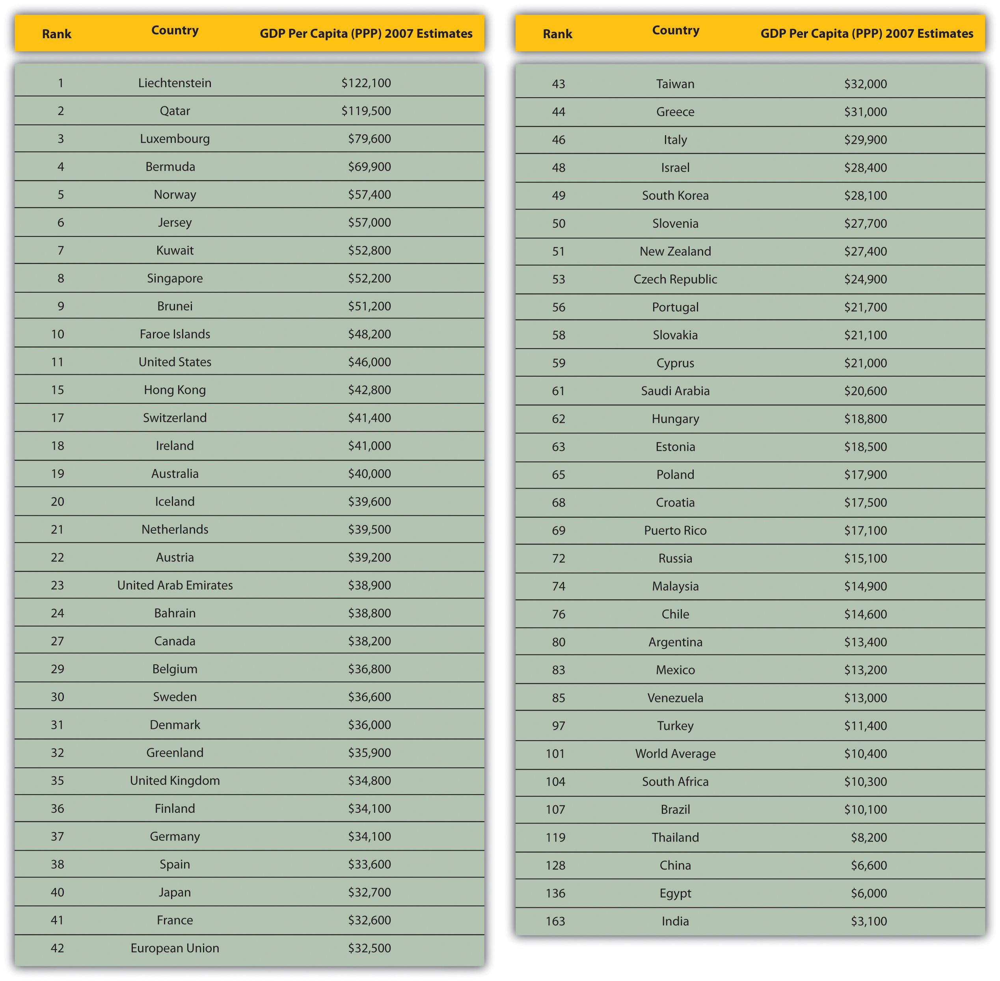

From the title of this chapter, you may be wondering—is this chapter going to cover the world? And, in a sense, the answer is yes. When global managers explore how to expand, they start by looking at the world. Knowing the major markets and the stage of development for each allows managers to determine how best to enter and expand. The manager’s goal is to hone in on a new country—hopefully, before their competitors and usually before the popular media does. China and India were expanding rapidly for several years before the financial press, such as the Wall Street Journal, elevated them to their current hot status.
It’s common to find people interested in doing business with a country simply because they’ve read that it’s the new “hot” economy. They may know little or nothing about the market or country—its history, evolution of thought, people, or how interactions are generally managed in a business or social context. Historically, many companies have only looked at new global markets once potential customers or partners have approached them. However, trade barriers are falling, and new opportunities are fast emerging in markets of the Middle East and Africa—further flattening the world for global firms. Companies are increasingly identifying these and other global markets for their products and services and incorporating them into their long-term growth strategies.
Savvy global managers realize that to be effective in a country, they need to know its recent political, economic, and social history. This helps them evaluate not only the current business opportunity but also the risk of political, economic, and social changes that can impact their business. First, Section 4.1 "Classifying World Economies" outlines how businesses and economists evaluate world economies. Then, the remaining sections review what developed and developing worlds are and how they differ, as well as explain how to evaluate the expanding set of emerging-market countries, which started with the BRIC countries (i.e., Brazil, Russia, India, and China) and has now expanded to include twenty-eight countries. Effective global managers need to be able to identify the markets that offer the best opportunities for their products and services. Additionally, managers need to monitor these emerging markets for new local companies that take advantage of business conditions to become global competitors.
India and China are among the world’s fastest-growing economies, contributing nearly 30 percent to global economic growth. Both China and India are not emerging economies—they’re actually “re-emerging,” having spent centuries at the center of trade throughout history: “These two Asian giants, which until 1800 used to make up half the world economy, are not, like Japan and Germany, mere nation states. In terms of size and population, each is a continent—and for all the glittering growth rates, a poor one.”“Contest of the Century,” Economist, August 19, 2010, accessed January 3, 2011, http://www.economist.com/node/16846256.
Both India and China are in fierce competition with each other as well as in their quest to catch up with the major economies in the developed world. Each have particular strengths and competitive advantages that have allowed each of them to weather the recent global financial crisis better than most countries. China’s growth has been mainly investment and export driven, focusing on low-cost manufacturing, with domestic consumption as low as 36 percent of gross domestic product (GDP). On the other hand, India’s growth has been derived mostly from a strong services sector and buoyant domestic consumption. India is also much less dependent on trade than China, relying on external trade for about 20 percent of its GDP versus 56 percent for China. The Chinese economy has doubled every eight years for the last three decades—the fastest rate for a major economy in recorded history. By 2011, China is the world’s second largest economy in the world behind the United States.Gopal Ethiraj, “China Edges Out Japan to Become World’s No. 2 Economy,” Asian Tribune, August 18, 2010, accessed January 7, 2011, http://www.asiantribune.com/news/2010/08/18/china-edges-out-japan-become-world%E2%80%99s-no-2-economy. A recent report by PricewaterhouseCoopers forecasts that China could overtake the US economy as early as 2020.Suzanne Rosselet, “Strengths of China and India to Take Them into League of Developing Countries,” Economic Times, May 7, 2010, accessed January 3, 2011, http://economictimes.indiatimes.com/features/corporate-dossier/Strengths-of-China-and-India-to-take-them-into-league-of-developing-countries/articleshow/5900893.cms.
China is also the first country in the world to have met the poverty-reduction target set in the UN Millennium Development Goals and has had remarkable success in lifting more than 400 million people out of poverty. This contrasts sharply with India, where 456 million people (i.e., 42 percent of the population) still live below the poverty line, as defined by the World Bank at $1.25 a day.Suzanne Rosselet, “Strengths of China and India to Take Them into League of Developing Countries,” Economic Times, May 7, 2010, accessed January 3, 2011, http://economictimes.indiatimes.com/features/corporate-dossier/Strengths-of-China-and-India-to-take-them-into-league-of-developing-countries/articleshow/5900893.cms. Section 4.1 "Classifying World Economies" will review in more detail how we classify countries. China has made greater strides in improving the conditions for its people, as measured by the HDI. All of this contributes to the local business conditions by both developing the skill sets of the workforce as well as expanding the number of middle-class consumers and their disposable incomes.
India has emerged as the fourth-largest market in the world when its GDP is measured on the scale of purchasing power parity. Both economies are increasing their share of world GDP, attracting high levels of foreign investment, and are recovering faster from the global crisis than developed countries. “Each country has achieved this with distinctly different approaches—India with a ‘grow first, build later’ approach versus a ‘top-down, supply driven’ strategy in China.”Suzanne Rosselet, “Strengths of China and India to Take Them into League of Developing Countries,” Economic Times, May 7, 2010, accessed January 3, 2011, http://economictimes.indiatimes.com/features/corporate-dossier/Strengths-of-China-and-India-to-take-them-into-league-of-developing-countries/articleshow/5900893.cms.
The Chinese economy historically outpaces India’s by just about every measure. China’s fast-acting government implements new policies with blinding speed, making India’s fractured political system appear sluggish and chaotic. Beijing’s shiny new airport and wide freeways are models of modern development, contrasting sharply with the sagging infrastructure of New Delhi and Mumbai. And as the global economy emerges from the Great Recession, India once again seems to be playing second fiddle. Pundits around the world laud China’s leadership for its well-devised economic policies during the crisis, which were so effective in restarting economic growth that they helped lift the entire Asian region out of the downturn.Michael Schuman, “India vs. China: Whose Economy Is Better?,” Time, January 28, 2010, accessed January 3, 2011, http://www.time.com/time/world/article/0,8599,1957281,00.html.
As recently as the early 1990s, India was as rich, in terms of national income per head. China then hurtled so far ahead that it seemed India could never catch up. But India’s long-term prospects now look stronger. While China is about to see its working-age population shrink, India is enjoying the sort of bulge in manpower which brought sustained booms elsewhere in Asia. It is no longer inconceivable that its growth could outpace China’s for a considerable time. It has the advantage of democracy—at least as a pressure valve for discontent. And India’s army is, in numbers, second only to China’s and America’s…And because India does not threaten the West, it has powerful friends both on its own merits and as a counterweight to China.“Contest of the Century,” Economist, August 19, 2010, accessed January 3, 2011, http://www.economist.com/node/16846256.
India’s domestic economy provides greater cushion from external shocks than China’s. Private domestic consumption accounts for 57 percent of GDP in India compared with only 35 percent in China. India’s confident consumer didn’t let the economy down. Passenger car sales in India in December jumped 40 percent from a year earlier.Michael Schuman, “India vs. China: Whose Economy Is Better?,” Time, January 28, 2010, accessed January 3, 2011, http://www.time.com/time/world/article/0,8599,1957281,00.html.
Since 1978, China’s economic growth and reform have dramatically improved the lives of hundreds of millions of Chinese, increased social mobility. The Chinese leadership has reduced the role of ideology in economic policy by adopting a more pragmatic perspective on many political and socioeconomic problems. China’s ongoing economic transformation has had a profound impact not only on China but on the world. The market-oriented reforms China has implemented over the past two decades have unleashed individual initiative and entrepreneurship. The result has been the largest reduction of poverty and one of the fastest increases in income levels ever seen.
China used to be the third-largest economy in the world but has overtaken Japan to become the second-largest in August 2010. It has sustained average economic growth of over 9.5 percent for the past 26 years. In 2009 its $4.814 trillion economy was about one-third the size of the United States economy.“Background Note: China,” Bureau of East Asian and Pacific Affairs, US Department of State, August 5, 2010, accessed January 3, 2011, http://www.state.gov/r/pa/ei/bgn/18902.htm. China leapfrogged over Japan and became the world’s number two economy in the second quarter of 2010, as receding global growth sapped momentum and stunted a shaky recovery.
India’s economic liberalization in 1991 opened gates to businesses worldwide. In the mid- to late 1980s, Rajiv Gandhi’s government eased restrictions on capacity expansion, removed price controls, and reduced corporate taxes. While his government viewed liberalizing the economy as a positive step, political pressures slowed the implementation of policies. The early reforms increased the rate of growth but also led to high fiscal deficits and a worsening current account. India’s major trading partner then, the Soviet Union, collapsed. In addition, the first Gulf War in 1991 caused oil prices to increase, which in turn led to a major balance-of-payments crisis for India. To be able to cope with these problems, the newly elected Prime Minister Narasimha Rao along with Finance Minister Manmohan Singh initiated a widespread economic liberalization in 1991 that is widely credited with what has led to the Indian economic engine of today. Focusing on the barriers for private sector investment and growth, the reforms enabled faster approvals and began to dismantle the License Raj, a term dating back to India’s colonial historical administrative legacy from the British and referring to a complex system of regulations governing Indian businesses.“Economic History of India,” History of India, accessed January 7, 2011, http://www.indohistory.com/economic_history_of_india.html.
Since 1990, India has been emerging as one of the wealthiest economies in the developing world. Its economic progress has been accompanied by increases in life expectancy, literacy rates, and food security. Goldman Sachs predicts that India’s GDP in current prices will overtake France and Italy by 2020; Germany, the United Kingdom, and Russia by 2025; and Japan by 2035 to become the third-largest economy of the world after the United States and China. India was cruising at 9.4 percent growth rate until the financial crisis of 2008–9, which affected countries the world over.Mamta Badkar, “Race of the Century: Is India or China the Next Economic Superpower?,” Business Insider, February 5, 2011, accessed May 18, 2011, http://www.businessinsider.com/are-you-betting-on-china-or-india-2011-1?op=1.
Both India and China have several strengths and weaknesses that contribute to the competitive battleground between them.
China’s Strengths
India’s Strengths

Infosys is one of India’s new wave of world-class IT companies.
Image courtesy of Infosys.
Each country has embraced the trend toward urbanization differently. Global businesses are impacted in the way cities are run:
China is in much better shape than India is. While India has barely paid attention to its urban transformation, China has developed a set of internally consistent practices across every element of the urbanization operating model: funding, governance, planning, sectorial policies, and shape. India has underinvested in its cities; China has invested ahead of demand and given its cities the freedom to raise substantial investment resources by monetizing land assets and retaining a 25 percent share of value-added taxes. While India spends $17 per capita in capital investments in urban infrastructure annually, China spends $116. Indian cities have devolved little real power and accountability to its cities; but China’s major cities enjoy the same status as provinces and have powerful and empowered political appointees as mayors. While India’s urban planning system has failed to address competing demands for space, China has a mature urban planning regime that emphasizes the systematic development of run-down areas consistent with long-range plans for land use, housing, and transportation.Richard Dobbs and Shirish Sankhe, “Opinion: China vs. India,” Financial Times, May 18, 2010, reprinted on McKinsey Global Institute website, accessed January 3, 2011, http://www.mckinsey.com/mgi/mginews/opinion_china_vs_india.asp.
Despite the urbanization challenges, India is likely to benefit in the future from its younger demographics: “By 2025, nearly 28 percent of China’s population will be aged 55 or older compared with only 16 percent in India.”Richard Dobbs and Shirish Sankhe, “Opinion: China vs. India,” Financial Times, May 18, 2010, reprinted on McKinsey Global Institute website, accessed January 3, 2011, http://www.mckinsey.com/mgi/mginews/opinion_china_vs_india.asp. The trend toward urbanization is evident in both countries. By 2025, 64 percent of China’s population will be living in urban areas, and 37 percent of India’s people will be living in cities.Richard Dobbs and Shirish Sankhe, “Opinion: China vs. India,” Financial Times, May 18, 2010, reprinted on McKinsey Global Institute website, accessed January 3, 2011, http://www.mckinsey.com/mgi/mginews/opinion_china_vs_india.asp. This historically unique trend offers global businesses exciting markets.
So what markets are likely to benefit the most from these trends? In India, by 2025, the largest markets will be transportation and communication, food, and health care followed by housing and utilities, recreation, and education. Even India’s slower-growing spending categories will represent significant opportunities for businesses because these markets will still be growing rapidly in comparison with their counterparts in other parts of the world. In China’s cities today, the fastest-growing categories are likely to be transportation and communication, housing and utilities, personal products, health care, and recreation and education. In addition, in both China and India, urban infrastructure markets will be massive.Richard Dobbs and Shirish Sankhe, “Opinion: China vs. India,” Financial Times, May 18, 2010, reprinted on McKinsey Global Institute website, accessed January 3, 2011, http://www.mckinsey.com/mgi/mginews/opinion_china_vs_india.asp.
While both India and China have unique strengths as well as many similarities, it’s clear that both countries will continue to grow in the coming decades offering global businesses exciting new domestic markets.See also “India’s Surprising Economic Miracle,” Economist, September 30, 2010, accessed January 3, 2011, http://www.economist.com/node/17147648; “A Bumpier but Freer Road,” Economist, September 3, 2010, accessed January 3, 2011, http://www.economist.com/node/17145035; Chris Monasterski, “Education: India vs. China,” Private Sector Development Blog, World Bank, April 25, 2007, accessed January 7, 2011, http://psdblog.worldbank.org/psdblog/2007/04/education_india.html; Shreyasi Singh, “India vs. China,” The Diplomat, August 27, 2010, accessed January 7, 2011, http://the-diplomat.com/indian-decade/2010/08/27/india-vs-china; “The India vs. China Debate: One Up for India?,” Benzinga, January 29, 2010, accessed January 7, 2011, http://www.benzinga.com/global/104829/the-india-vs-china-debate-one-up-for-india; Steve Hamm, “India’s Advantages over China,” Bloomberg Business, March 6, 2007, accessed January 7, 2011, http://www.businessweek.com/globalbiz/blog/globespotting/archives/2007/03/indias_advantag.html.
(AACSB: Ethical Reasoning, Multiculturalism, Reflective Thinking, Analytical Skills)
Experts debate exactly how to define the level of economic development of a country—which criteria to use and, therefore, which countries are truly developed. This debate crosses political, economic, and social arguments.
When evaluating a country, a manager is assessing the country’s income and the purchasing power of its people; the legal, regulatory, and commercial infrastructure, including communication, transportation, and energy; and the overall sophistication of the business environment.
Why does a country’s stage of development matter? Well, if you’re selling high-end luxury items, for example, you’ll want to focus on the per capita income of the local citizens. Can they afford a $1,000 designer handbag, a luxury car, or cutting-edge, high-tech gadgets? If so, how many people can afford these expensive items (i.e., how large is the domestic market)? For example, in January 2011, the Financial Times quotes Jim O’Neill, a leading business economist, who states, “South Africa currently accounts for 0.6 percent of world GDP. South Africa can be successful, but it won’t be big.”Jennifer Hughes, “‘Bric’ Creator Adds Newcomers to List,” Financial Times, January 16, 2010, accessed January 7, 2011, http://www.ft.com/cms/s/0/f717c8e8-21be-11e0-9e3b-00144feab49a.html#ixzz1MKbbO8ET. Section 4.4 "Emerging Markets" discusses the debate around the term emerging markets and which countries should be labeled as such. But clearly the size of the local market is an important key factor for businesspeople.
Even in developing countries, there are always wealthy people who want and can afford luxury items. But these consumers are just as likely to head to the developed world to make their purchase and have little concern about any duties or taxes they may have to pay when bringing the items back into their home country. This is one reason why companies pay special attention to understanding their global consumers as well as where and how these consumers purchase goods. Global managers also focus on understanding if a country’s target market is growing and by what rate. Countries like China and India caught the attention of global companies, because they had large populations that were eager for foreign goods and services but couldn’t afford them. As more people in each country acquired wealth, their buying appetites increased. The challenge is how to identify which consumers in which countries are likely to become new customers. Managers focus on globally standard statistics as one set of criteria to understand the stage of development of any country that they’re exploring for business.“Global Economies,” CultureQuest Global Business Multimedia Series (New York: Atma Global, 2010).
Let’s look more closely at some of these globally standard statistics and classifications that are commonly used to define the stage of a country’s development.
Gross domestic product (GDP)The value of all the goods and services produced by a country in a single year. is the value of all the goods and services produced by a country in a single year. Usually quoted in US dollars, the number is an official accounting of the country’s output of goods and services. For example, if a country has a large black, or underground, market for transactions, it will not be included in the official GDP. Emerging-market countries, such as India and Russia, historically have had large black-market transactions for varying reasons, which often meant their GDP was underestimated.
Figure 4.1

Source: US Central Intelligence Agency, “Country Comparison: GDP (PPP),” World Factbook, accessed June 3, 2011, https://www.cia.gov/library/publications/the-world-factbook/rankorder/2001rank.html.
Figure 4.1 shows the total size of the economy, but a company will want to know the income per person, which may be a better indicator of the strength of the local economy and the market opportunity for a new consumer product. GDP is often quoted on a per person basis. Per capita GDPThe value of the GDP divided by the population of the country. This is also referred to as the nominal per capita GDP. is simply the GDP divided by the population of the country.
The per capita GDP can be misleading because actual costs in each country differ. As a result, more managers rely on the GDP per personThe value of the GDP adjusted for purchasing power; helps managers understand how much income local residents have. adjusted for purchasing power to understand how much income local residents have. This number helps professionals evaluate what consumers in the local market can afford.
Companies selling expensive goods and services may be less interested in economies with low per capita GDP. Figure 4.2 "Per Capita GDP on a Purchasing Power Parity Basis" shows the income (GDP) on a per person basis. For space, the chart has been condensed by removing lower profile countries, but the ranks are valid. Surprisingly, some of the hottest emerging-market countries—China, India, Turkey, Brazil, South Africa, and Mexico—rank very low on the income per person charts. So, why are these markets so exciting? One reason might be that companies selling cheaper, daily-use items, such as soap, shampoos, and low-end cosmetics, have found success entering developing, but promising, markets.
Figure 4.2 Per Capita GDP on a Purchasing Power Parity Basis
Source: US Central Intelligence Agency, “Country Comparison: GDP—Per Capita (PPP),” World Factbook, accessed June 3, 2011, https://www.cia.gov/library/publications/the-world-factbook/rankorder/2004rank.html.
To compare production and income across countries, we need to look at more than just GDP. Economists seek to adjust this number to reflect the different costs of living in specific countries. Purchasing power parity (PPP)An economic theory that adjusts the exchange rate between countries to ensure that a good is purchased for the same price in the same currency. is, in essence, an economic theory that adjusts the exchange rate between countries to ensure that a good is purchased for the same price in the same currency. For example, a basic cup of coffee should cost the same in London as in New York.
A nation’s GDP at purchasing power parity (PPP) exchange rates is the sum value of all goods and services produced in the country valued at prices prevailing in the United States. This is the measure most economists prefer when looking at per-capita welfare and when comparing living conditions or use of resources across countries. The measure is difficult to compute, as a US dollar value has to be assigned to all goods and services in the country regardless of whether these goods and services have a direct equivalent in the United States (for example, the value of an ox-cart or non-US military equipment); as a result, PPP estimates for some countries are based on a small and sometimes different set of goods and services. In addition, many countries do not formally participate in the World Bank’s PPP project to calculate these measures, so the resulting GDP estimates for these countries may lack precision. For many developing countries, PPP-based GDP measures are multiples of the official exchange rate (OER) measure. The differences between the OER- and PPP-denominated GDP values for most of the wealthy industrialized countries are generally much smaller.US Central Intelligence Agency, “Country Comparison:GDP (PPP),” World Factbook, accessed January 3, 2011, https://www.cia.gov/library/publications/the-world-factbook/rankorder/2001rank.html.
In some countries, like Germany, the United Kingdom, or Japan, the cost of living is quite high and the per capita GDP (nominal) is higher than the GDP adjusted for purchasing power. Conversely, in countries like Mexico, Brazil, China, and India, the per capita GDP adjusted for purchasing power is higher than the nominal per capita GDP, implying that local consumers in each country can afford more with their incomes.
Figure 4.3 Per Capita GDP (Nominal) versus Per Capita GDP (PPP) of Select Countries (2010)

Sources: “List of Countries by GDP (Nominal) Per Capita,” Wikipedia, http://en.wikipedia.org/wiki/List_of_countries_by_GDP_(nominal)_per_capita. “Country Comparison: GDP—Per Capita (PPP),” US Central Intelligence Agency, https://www.cia.gov/library/publications/the-world-factbook/rankorder/2004rank.html.
GDP and purchasing power provide indications of a country’s level of economic development by using an income-focused statistic. However, in recent years, economists and business analysts have focused on indicators that measure whether people’s needs are satisfied and whether the needs are equally met across the local population. One such indication is the human development index (HDI)A summary composite index that measures a country’s average achievements in three basic aspects of human development: health, knowledge, and a decent standard of living., which measures people’s satisfaction in three key areas—long and healthy life in terms of life expectancy; access to quality education equally; and a decent, livable standard of living in the form of income.
Since 1990, the United Nations Development Program (UNDP) has produced an annual report listing the HDI for countries. The HDI is a summary composite index that measures a country’s average achievements in three basic aspects of human development: health, knowledge, and a decent standard of living. Health is measured by life expectancy at birth; knowledge is measured by a combination of the adult literacy rate and the combined primary, secondary, and tertiary gross enrollment ratio; and standard of living by (income as measured by) GDP per capita (PPP US$).UNDP, “Frequently Asked Questions (FAQs) about the Human Development Index (HDI): What Is the HDI?,” Human Development Reports, accessed May 15, 2011, http://hdr.undp.org/en/statistics/hdi.
While the HDI is not a complete indicator of a country’s level of development, it does help provide a more comprehensive picture than just looking at the GDP. The HDI, for example, does not reflect political participation or gender inequalities. The HDI and the other composite indices can only offer a broad proxy on some of the key the issues of human development, gender disparity, and human poverty.UNDP, “Is the HDI Enough to Measure a Country’s Level of Development?,” Human Development Reports, accessed May 15, 2011, http://hdr.undp.org/en/statistics/hdi. Table 4.1 "Human Development Index (HDI)—2010 Rankings" shows the rankings of the world’s countries for the HDI for 2010 rankings. Measures such as the HDI and its components allow global managers to more accurately gauge the local market.
Table 4.1 Human Development Index (HDI)—2010 Rankings
| Very High Human Development | High Human Development | Medium Human Development | Low Human Development |
|---|---|---|---|
| 1. Norway | 43. Bahamas | 86. Fiji | 128. Kenya |
| 2. Australia | 44. Lithuania | 87. Turkmenistan | 129. Bangladesh |
| 3. New Zealand | 45. Chile | 88. Dominican Republic | 130. Ghana |
| 4. United States | 46. Argentina | 89. China | 131. Cameroon |
| 5. Ireland | 47. Kuwait | 90. El Salvador | 132. Myanmar |
| 6. Liechtenstein | 48. Latvia | 91. Sri Lanka | 133. Yemen |
| 7. Netherlands | 49. Montenegro | 92. Thailand | 134. Benin |
| 8. Canada | 50. Romania | 93. Gabon | 135. Madagascar |
| 9. Sweden | 51. Croatia | 94. Suriname | 136. Mauritania |
| 10. Germany | 52. Uruguay | 95. Bolivia (Plurinational State of) | 137. Papua New Guinea |
| 11. Japan | 53. Libyan Arab Jamahiriya | 96. Paraguay | 138. Nepal |
| 12. Korea (Republic of) | 54. Panama | 97. The Philippines | 139. Togo |
| 13. Switzerland | 55. Saudi Arabia | 98. Botswana | 140. Comoros |
| 14. France | 56. Mexico | 99. Moldova (Republic of) | 141. Lesotho |
| 15. Israel | 57. Malaysia | 100. Mongolia | 142. Nigeria |
| 16. Finland | 58. Bulgaria | 101. Egypt | 143. Uganda |
| 17. Iceland | 59. Trinidad and Tobago | 102. Uzbekistan | 144. Senegal |
| 18. Belgium | 60. Serbia | 103. Micronesia (Federated States of) | 145. Haiti |
| 19. Denmark | 61. Belarus | 104. Guyana | 146. Angola |
| 20. Spain | 62. Costa Rica | 105. Namibia | 147. Djibouti |
| 21. Hong Kong, China (SAR) | 63. Peru | 106. Honduras | 148. Tanzania (United Republic of) |
| 22. Greece | 64. Albania | 107. Maldives | 149. Côte d'Ivoire |
| 23. Italy | 65. Russian Federation | 108. Indonesia | 150. Zambia |
| 24. Luxembourg | 66. Kazakhstan | 109. Kyrgyzstan | 151. Gambia |
| 25. Austria | 67. Azerbaijan | 110. South Africa | 152. Rwanda |
| 26. United Kingdom | 68. Bosnia and Herzegovina | 111. Syrian Arab Republic | 153. Malawi |
| 27. Singapore | 69. Ukraine | 112. Tajikistan | 154. Sudan |
| 28. Czech Republic | 70. Iran (Islamic Republic of) | 113. Vietnam | 155. Afghanistan |
| 29. Slovenia | 71. The former Yugoslav Republic of Macedonia | 114. Morocco | 156. Guinea |
| 30. Andorra | 72. Mauritius | 115. Nicaragua | 157. Ethiopia |
| 31. Slovakia | 73. Brazil | 116. Guatemala | 158. Sierra Leone |
| 32. United Arab Emirates | 74. Georgia | 117. Equatorial Guinea | 159. Central African Republic |
| 33. Malta | 75. Venezuela (Bolivarian Republic of) | 118. Cape Verde | 160. Mali |
| 34. Estonia | 76. Armenia | 119. India | 161. Burkina Faso |
| 35. Cyprus | 77. Ecuador | 120. Timor-Leste | 162. Liberia |
| 36. Hungary | 78. Belize | 121. Swaziland | 163. Chad |
| 37. Brunei Darussalam | 79. Colombia | 122. Lao People's Democratic Republic | 164. Guinea-Bissau |
| 38. Qatar | 80. Jamaica | 123. Solomon Islands | 165. Mozambique |
| 39. Bahrain | 81. Tunisia | 124. Cambodia | 166. Burundi |
| 40. Portugal | 82. Jordan | 125. Pakistan | 167. Niger |
| 41. Poland | 83. Turkey | 126. Congo | 168. Congo (Democratic Republic of the) |
| 42. Barbados |
84. Algeria 85. Tonga |
127. São Tomé and Príncipe | 169. Zimbabwe |
Source: UNDP, “Human Development Index (HDI)—2010 Rankings,” Human Development Reports, accessed January 6, 2011, http://hdr.undp.org/en/statistics.
In 1995, the UNDP introduced two new measures of human development that highlight the status of women in each society.
The first, gender-related development index (GDI), measures achievement in the same basic capabilities as the HDI does, but takes note of inequality in achievement between women and men. The methodology used imposes a penalty for inequality, such that the GDI falls when the achievement levels of both women and men in a country go down or when the disparity between their achievements increases. The greater the gender disparity in basic capabilities, the lower a country’s GDI compared with its HDI. The GDI is simply the HDI discounted, or adjusted downwards, for gender inequality.
The second measure, gender empowerment measure (GEM), is a measure of agency. It evaluates progress in advancing women’s standing in political and economic forums. It examines the extent to which women and men are able to actively participate in economic and political life and take part in decision making. While the GDI focuses on expansion of capabilities, the GEM is concerned with the use of those capabilities to take advantage of the opportunities of life.UNDP, “Measuring Inequality: Gender-related Development Index (GDI) and Gender Empowerment Measure (GEM),” Human Development Reports, accessed January 3, 2011, http://hdr.undp.org/en/statistics/indices/gdi_gem.
In 1997, UNDP added a further measure—the human poverty index (HPI)A composite index that uses indicators of the most basic dimensions of deprivation: a short life (i.e., longevity), lack of basic education (i.e., knowledge), and lack of access to public and private resources (i.e., decent standard of living)..
If human development is about enlarging choices, poverty means that opportunities and choices most basic to human development are denied. Thus a person is not free to lead a long, healthy, and creative life and is denied access to a decent standard of living, freedom, dignity, self-respect and the respect of others. From a human development perspective, poverty means more than the lack of what is necessary for material well-being.
For policy-makers, the poverty of choices and opportunities is often more relevant than the poverty of income. The poverty of choices focuses on the causes of poverty and leads directly to strategies of empowerment and other actions to enhance opportunities for everyone. Recognizing the poverty of choices and opportunities implies that poverty must be addressed in all its dimensions, not income alone.UNDP, “The Human Poverty Index (HPI),” Human Development Reports, accessed January 3, 2011, http://hdr.undp.org/en/statistics/indices/hpi.
Rather than measure poverty by income, the HPI is a composite index that uses indicators of the most basic dimensions of deprivation: a short life (longevity), a lack of basic education (knowledge), and a lack of access to public and private resources (decent standard of living). There are two different HPIs—one for developing countries (HPI-1) and another for a group of select high-income OECD (Organization for Economic and Development) countries (HPI-2), which better reflects the socioeconomic differences between the two groups. HPI-2 also includes a fourth indicator that measures social exclusion as represented by the rate of long-term unemployment.UNDP, “The Human Poverty Index (HPI),” Human Development Reports, accessed January 3, 2011, http://hdr.undp.org/en/statistics/indices/hpi.
So, the richest countries—like Liechtenstein, Qatar, and Luxembourg—may not always have big local markets or, in contrast, the poorest countries may have the largest local market as determined by the size of the local population. Savvy business managers need to compare and contrast a number of different classifications, statistics, and indicators before they can interpret the strength, depth, and extent of a local market opportunity for their particular industry and company.
The goal of this chapter is to review a sampling of countries in the developed, developing, and emerging markets to understand how economists and businesspeople perceive market opportunities. Of course, one chapter can’t do justice to all of these markets, but through select examples, you’ll see how countries have evolved in the post–World War II global economic, political, and social environments. Remember that the goal of any successful businessperson is to monitor the changing markets and spot opportunities and trends ahead of his or her peers.
The major classifications used by analysts are evolving. The primary criteria for determining the stage of development may change within a decade as demonstrated with the addition of the gender and poverty indices. In addition, with every global crisis or event, there’s a tendency to add more acronyms and statistics into the mix. Savvy global managers have to sort through these to determine what’s relevant to their industry and their business objectives in one or more countries. For example, in the fall of 2010, after two years of global financial crisis, global investors started using a new acronym to describe the changing economic fortunes among countries: HIICs, or heavily indebted industrialized countries. These countries include the United States, the United Kingdom, and Japan. “‘Developed markets are basically behaving like emerging markets,’ says HSBC’s Richard Yetsenga. ‘And emerging markets are quickly becoming more developed.’”Kelly Evans, “‘HIIC’ Nations Are Acting Like Backwaters,” Wall Street Journal, October 1, 2010, accessed January 3, 2011, http://online.wsj.com/article/SB10001424052748704789404575524402059410506.html. Investors are pulling money from the developed countries and into the BRIC countries (i.e., Brazil, Russia, India, and China), which are “‘where the population growth is, where the raw materials are, and where the economic growth is,’ says Michael Penn, global equity strategist at Bank of America Merrill Lynch.”Kelly Evans, “‘HIIC’ Nations Are Acting Like Backwaters,” Wall Street Journal, October 1, 2010, accessed January 3, 2011, http://online.wsj.com/article/SB10001424052748704789404575524402059410506.html. The key here is to understand that classifications—just like countries and international business—are constantly evolving.
Rather than being overwhelmed by the evolving data, it’s critical to understand why the changes are occurring, what attitudes and perceptions are shifting, and if they are supported by real, verifiable data. In the above example of HIICs, investors from the major economies are likely motivated by quick gains on stock prices and the prevailing perception that emerging markets offer companies the best growth prospects. But as a businessperson, the timeline for your company would be in years, not months; so it’s important to evaluate information based on your company’s goals rather than relying on the media, investment markets, or other singularly focused industry professionals.
To truly monitor the global business arena and select prospective countries, you need to follow the news, trends, and available information for a period of time. Over time, savvy global managers develop a geographic, industrial, or product expertise—or some combination. Those who become experts on a specific country spend a great deal of time in the country, sometimes learn the language, and almost always develop an understanding of the country’s political, economic, and social history as well as its culture and evolution. They gain a deeper knowledge of more than just the country’s current business environment. In the business world, these folks are affectionately called “old hands”—as in he is an “old China hand” or an “old Indonesia hand.” This is a reflection of how seasoned or experienced a person is with a country.
(AACSB: Reflective Thinking, Analytical Skills)
Many people are quick to focus on the developing economies and emerging markets as offering the brightest growth prospects. And indeed, this is often the case. However, you shouldn’t overlook the developed economies; they too can offer growth opportunities, depending on the specific product or service. The key is to understand what developed economies are and to determine their suitability for a company’s strategy.
In essence, developed economiesAlso known as advanced economies, these countries are characterized as postindustrial with high per capita incomes, competitive industries, transparent legal and regulatory environments, and well-developed commercial infrastructures., also known as advanced economies, are characterized as postindustrial countries—typically with a high per capita income, competitive industries, transparent legal and regulatory environments, and well-developed commercial infrastructure. Developed countries also tend to have high human development index (HDI) rankings—long life expectancies, high-quality health care, equal access to education, and high incomes. In addition, these countries often have democratically elected governments.
In general, the developed world encompasses Canada, the United States, Western Europe, Japan, South Korea, Australia, and New Zealand. While these economies have moved from a manufacturing focus to a service orientation, they still have a solid manufacturing base. However, just because an economy is developed doesn’t mean that it’s among the largest economies. And, conversely, some of the world’s largest economies—while growing rapidly—don’t have competitive industries or transparent legal and regulatory environments. The infrastructure in these countries, while improving, isn’t yet consistent or substantial enough to handle the full base of business and consumer demand. Countries like Brazil, Russia, India, and China—also known as BRIC—are hot emerging markets but are not yet considered developed by most widely accepted definitions. Section 4.4 "Emerging Markets" covers the BRIC countries and other emerging markets.
The following sections contain a sampling of the largest developed countries that focuses on the business culture, economic environment, and economic structure of each country.The sections that follow are excerpted in part from two resources owned by author Sanjyot P. Dunung’s firm, Atma Global: CultureQuest Business Multimedia Series and bWise: Business Wisdom Worldwide. The excerpts are reprinted with permission and attributed to the country-specific product when appropriate.
Geographically, the United States is the fourth-largest country in the world—after Russia, China, and Canada. It sits in the middle of North America, bordered to the north by Canada and to the south by Mexico. With a history steeped in democratic and capitalist institutions, values and entrepreneurship, the United States has been the driver of the global economy since World War II.
The US economy accounts for nearly 25 percent of the global gross domestic product (GDP). Recently, the severe economic crisis and recession have led to double-digit unemployment and record deficits. Nevertheless, the United States remains a global economic engine, with an economy that is about twice as large as that of the next single country, China. With an annual GDP of more than $14 trillion, only the entire European Union can match the US economy in size. An economist’s proverb notes that when the US economy sneezes, the rest of the world catches a cold. Despite its massive wealth, 12 percent of the population lives below the poverty line.US Central Intelligence Agency, “North America: United States: Economy,” World Factbook, accessed January 7, 2011, https://www.cia.gov/library/publications/the-world-factbook/geos/us.html.
Throughout the cycles of growth and contractions, the US economy has a history of bouncing back relatively quickly. In recessions, the government and the business community tend to respond swiftly with measures to reduce costs and encourage growth. Americans often speak in terms of bull and bear markets. A bull marketA market in which prices rise for a prolonged period of time. is one in which prices rise for a prolonged period of time, while a bear marketA market in which prices steadily drop in a downward cycle. is one in which prices steadily drop in a downward cycle.
The strength of the US economy is due in large part to its diversity. Today, the United States has a service-based economy. In 2009, industry accounted for 21.9 percent of the GDP; services (including finance, insurance, and real estate) for 76.9 percent; and agriculture for 1.2 percent.US Central Intelligence Agency, “North America: United States: Economy,” World Factbook, accessed January 7, 2011, https://www.cia.gov/library/publications/the-world-factbook/geos/us.html. Manufacturing is a smaller component of the economy; however, the United States remains a major global manufacturer. The largest manufacturing sectors are highly diversified and technologically advanced—petroleum, steel, motor vehicles, aerospace, telecommunications, chemicals, electronics, food processing, consumer goods, lumber, and mining.
The sectors that have grown the most in the past decades are financial services, car manufacturing, and, most important, information technology (IT), which has more than doubled its output in the past decade. It now accounts for nearly 10 percent of the country’s GDP. As impressive as that figure is, it hardly takes into account the many ways in which IT has transformed the US economy. After all, improvements in information technology and telecommunications have increased the productivity of nearly every sector of the economy.
The United States is so big that its abundant natural resources account for only 4.3 percent of its GDP. Even so, it has the largest agricultural base in the world and is among the world’s leading producers of petroleum and timber products. US farms produce about half the world’s corn—though most of it is grown to feed beef and dairy cattle. The US imports about 30 percent of its oil, despite its own massive reserves. That’s because Americans consume roughly a quarter of the world’s total energy and more than half its oil, making them dependent on other oil-producing nations in some fairly troublesome ways.
The US retail and entertainment industries are very valuable to the economy. The country’s media products, including movies and music, are the country’s most visible exports. When it comes to business, the United States might well be called the “king of the jungle.” Emboldened by a strong free-market economy, legions of US companies have achieved unparalleled success. One by-product of this competitive spirit is an abundance of secure, well-managed business partnerships at home and abroad. And although the majority of US companies aren’t multinational giants, an emphasis on hard work and a sense of fair play pervade the business culture.
In a culture where entrepreneurialism is practically a national religion, the business landscape is broad and diverse. At one end are enduring multinationals, like Coca-Cola and General Electric, which were founded by visionary entrepreneurs and are now run by boards of directors and appointed managers who answer to shareholders. At the other end of the spectrum are small businesses—millions of them—many owned and operated by a single person.
Today, more companies than ever are “going global,” fueled by an increased demand for varied products and services around the world. Expanding into new markets overseas—often through joint ventures and partnerships—is becoming a requirement for success in business.
Another trend that has gained much media attention is outsourcing—subcontracting work, sometimes to foreign companies. It’s now quite common for companies of all sizes to pay outside firms to do their payroll, provide telecommunications support, and perform a range of operational services. This has led to a growth in small contractors, often operating out of their homes, who offer a variety of services, including advertising, public relations, and graphic design.CultureQuest Business Multimedia Series: USA (New York: Atma Global, 2010); bWise: Business Wisdom Worldwide: USA (New York: Atma Global, 2011).
Today, the European Union (EU) represents the monetary union of twenty-seven European countries. (Chapter 5 "Global and Regional Economic Cooperation and Integration", Section 5.2 "Regional Economic Integration" reviews the history of the EU and the factors impacting its outlook.) One of the primary purposes of the EU was to create a single market for business and workers accompanied by a single currency, the euro. Internally, the EU has made strides toward abolishing trade barriers, has adopted a common currency, and is striving toward convergence of living standards. Internationally, the EU aims to bolster Europe’s trade position and its political and economic power. Because of the great differences in per capita income among member states (i.e., from $7,000 to $79,000) and historic national animosities, the EU faces difficulties in devising and enforcing common policies. The EU’s strengths also come from the formidable strengths of some of its economic powerhouse members. Germany is the leading economy in the EU.
Germany has the fifth-largest economy in the world, after the United States, China, Japan, and India. With a heavily export-oriented economy, the country is a leading exporter of machinery, vehicles, chemicals, and household equipment and benefits from a highly skilled labor force. It remains the largest and strongest economy in Europe and the second most-populous country after Russia in Europe.
The country has a socially responsible market economy that encourages competition and free initiative for the individual and for business. The Grundgesetz (Basic Law) guarantees private enterprise and private property, but stipulates that these rights must be exercised in the welfare and interest of the public.
Germany’s economic development has been shaped, in large part, by its lack of natural resources, making it highly dependent on other countries. This may explain why the country has repeatedly sought to expand its power, particularly on its eastern flank.
Since the end of World War II, successive governments have sought to retain the basic elements of Germany’s complex economic system (the Soziale Marktwirtschaft). Notably, relationships between employer and employee and between private industry and government have remained stable. Over the years, the country has had few industrial disputes. Furthermore, active participation by all groups in the economic decision making process has ensured a level of cooperation unknown in many other Western countries. Nevertheless, high unemployment and high fiscal deficits are key issues.
Overall, living standards are high, and Germany is a prosperous nation. The majority of Germans live in comfortable housing with modern amenities. The choice of available food is broad and includes cuisine from around the world. Germans enjoy luxury cars, and technology and fashion are big industries. Under federal law, workers are guaranteed minimum income, vacation time, and other benefits. Recently, the government has focused on economic reforms, particularly in the labor market, and tax reduction.
Germany is home to some of the world’s most important businesses and industries. Daimler, Volkswagen, and BMW are global forces in the automotive field. Germany remains the fourth-largest auto manufacturer behind China, Japan, and the United States. German BASF, Hoechst, and Bayer are giants in the chemical industry. Siemens, a world leader in electronics, is the country’s largest employer, while Bertelsmann is the largest publishing group in the world. In the banking industry, Deutsche Bank is one of the world’s largest. In addition to these international giants, Germany has many small- and medium-sized, highly specialized firms. These businesses make up a disproportionately large part of Germany’s exports.
Services drive the economy, representing 72.3 percent (in 2009) of the total GDP. Industry accounts for 26.8 percent of the economy, and agriculture represents 0.9 percent. Despite the strong services sector, manufacturing remains one of the most important components of the Germany economy. Key German manufacturing industries are among the world’s largest and most technologically advanced producers of iron, steel, coal, cement, chemicals, machinery, vehicles, machine tools, electronics, food and beverages, shipbuilding, and textiles. Manufacturing provides not only significant sources of revenue but also the know-how that Germany exports around the world.CultureQuest Business Multimedia Series: Germany (New York: Atma Global, 2010); bWise: Business Wisdom Worldwide: Germany (New York: Atma Global, 2011).
Located off the east coast of Asia, the Japanese archipelago consists of four large islands—Honshu, Hokkaido, Kyushu, and Shikoku—and about four thousand small islands, which when combined are equal to the size of California.
The American occupation of Japan following World War II laid the foundation for today’s modern economic and political society. The occupation was intended to demilitarize Japan, to fully democratize the government, and to reform Japanese society and the economy. The Americans revised the then-existing constitution along the lines of the British parliamentary model. The Japanese adopted the new constitution in 1946 as an amendment to their original 1889 constitution. On the whole, American reforms rebuilt Japanese industry and were welcomed by the Japanese. The American occupation ended in 1952, when Japan was declared an independent state.
As Japan became an industrial superpower in the 1950s and 1960s, other countries in Asia and the global superpowers began to expect Japan to participate in international aid and defense programs and in regional industrial-development programs. By the late 1960s, Japan had the third-largest economy in the world. However, Japan was no longer free from foreign influences. In one century, the country had gone from being relatively isolated to being dependent on the rest of the world for its resources with an economy reliant on trade.
In the post–World War II period, Japanese politics have not been characterized by sharp divisions between liberal and conservative elements, which in turn have provided enormous support for big business. The Liberal Democratic Party (LDP), created in 1955 as the result of a merger of two of the country’s biggest political parties, has been in power for most of the postwar period. The LDP, a major proponent of big business, generally supports the conservative viewpoint. The “Iron Triangle,” as it is often called, refers to the tight relationship among Japanese politicians, bureaucrats, and big business leaders.
Until recently, the overwhelming success of the economy overshadowed other policy issues. This is particularly evident with the once powerful Ministry of International Trade and Industry (MITI). For much of Japan’s modern history, MITI has been responsible for establishing, coordinating, and regulating specific industry policies and targets, as well as having control over foreign trade interests. In 2001, its role was assumed by the newly created METI, the Ministry of Economy, Trade and Industry.
Japan’s post–World War II success has been the result of a well-crafted economic policy that is closely administered by the government in alliance with large businesses. Prior to World War II, giant corporate holding companies called zaibatsu worked in cooperation with the government to promote specific industries. At one time, the four largest zaibatsu organizations were Mitsui, Mitsubishi, Sumitomo, and Yasuda. Each of the four had significant holdings in the fields of banking, manufacturing, mining, shipping, and foreign marketing. Policies encouraged lifetime employment, employer paternalism, long-term relationships with suppliers, and minimal competition. Lifetime employment continues today, although it’s coming under pressure in the ongoing recession. This policy is often credited as being one of the stabilizing forces enabling Japanese companies to become global powerhouses.Sanjyot P. Dunung, Doing Business in Asia: The Complete Guide, 2nd ed. (New York: Jossey-Bass, 1998).
The zaibatsus were dismantled after World War II, but some of them reemerged as modern-day keiretsu, and many of their policies continue to have an effect on Japan. Keiretsu refers to the intricate web of financial and nonfinancial relationships between companies that virtually links together in a pattern of formal and informal cross-ownership and mutual obligation. The keiretsu nature of Japanese business has made it difficult for foreign companies to penetrate the commercial sector. In response to recent global economic challenges, the government and private businesses have recognized the need to restructure and deregulate parts of the economy, particularly in the financial sector. However, they have been slow to take action, further aggravating a weakened economy.
Japan has very few mineral and energy resources and relies heavily on imports to bring in almost all of its oil, iron ore, lead, wool, and cotton. It’s the world’s largest importer of numerous raw materials including coal, copper, zinc, and lumber. Despite a shortage of arable land, Japan has gone to great lengths to minimize its dependency on imported agricultural products and foodstuffs, such as grains and beef. Agriculture represents 1.6 percent of the economy. The country’s chief crops include rice and other grains, vegetables, and fruits. Japanese political and economic protectionist policies have ensured that the Japanese remain fully self-sufficient in rice production, which is their main staple.
As with other developed nations, services lead the economy, representing 76.5 percent of the national GDP.US Central Intelligence Agency, “East & Southeast Asia: Japan: Economy,” World Factbook, accessed January 4, 2011, https://www.cia.gov/library/publications/the-world-factbook/geos/ja.html. Industry accounts for 21.9 percent of the country’s output. Japan benefits from its highly skilled workforce. However, the high cost of labor combined with the cost of importing raw materials has significantly affected the global competitiveness of its industries. Japan excels in high-tech industries, particularly electronics and computers. Other key industries include automobiles, machinery, and chemicals. The service industry is beginning to expand and provide high-quality computer-related services, advertising, financial services, and other advanced business services.CultureQuest Business Multimedia Series: Japan (New York: Atma Global, 2010); bWise: Business Wisdom Worldwide: Japan (New York: Atma Global, 2011).
(AACSB: Reflective Thinking, Analytical Skills)
The developing worldCountries that rank lower on various classifications including GDP and the HDI. These countries tend to have economies focused on one or more key industries and tend to have poor commercial infrastructure. The local business environment tends not to be transparent, and there is usually a weak competitive industry. refers to countries that rank lower on the various classifications from Section 4.1 "Classifying World Economies". The residents of these economies tend to have lower discretionary income to spend on nonessential goods (i.e., goods beyond food, housing, clothing, and other necessities). Many people, particularly those in developing countries, often find the classifications limiting or judgmental. The intent here is to focus on understanding the information that a global business professional will need to determine whether a country, including a developing country, offers an interesting local market. Some countries may perceive the classification as a slight; others view it as a benefit. For example, in global trade, being a developing country sometimes provides preferences and extra time to meet any requirements dismantling trade barriers.
[In the World Trade Organization (WTO), t]here are no WTO definitions of “developed” and “developing” countries. Members announce for themselves whether they are “developed” or “developing” countries. However, other members can challenge the decision of a member to make use of provisions available to developing countries.
Developing country status in the WTO brings certain rights. There are for example provisions in some WTO Agreements which provide developing countries with longer transition periods before they are required to fully implement the agreement and developing countries can receive technical assistance.
That a WTO member announces itself as a developing country does not automatically mean that it will benefit from the unilateral preference schemes of some of the developed country members such as the Generalized System of Preferences (GSP). In practice, it is the preference giving country which decides the list of developing countries that will benefit from the preferences.“Who Are the Developing Countries in the WTO?,” World Trade Organization, accessed January 5, 2011, http://www.wto.org/english/tratop_e/devel_e/d1who_e.htm.
Developing countries sometimes find that their economies improve and gradually they become emerging markets. (Section 4.4 "Emerging Markets" discusses emerging markets.) Many developing economies represent old cultures and rich histories. Focusing only on today’s political, economic, and social conditions distorts the picture of what these countries have been and what they might become again. This category hosts the greatest number of countries around the world.
It’s important to understand that the term developing countries is different from Third-World countries, which was a traditional classification for countries along political and economic lines. It helps to understand how this terminology has evolved.
When people talk about the poorest countries of the world, they often refer to them with the general term Third World, and they think everybody knows what they are talking about. But when you ask them if there is a Third World, what about a Second or a First World, you almost always get an evasive answer…
The use of the terms First, the Second, and the Third World is a rough, and it’s safe to say, outdated model of the geopolitical world from the time of the cold war.
There is no official definition of the first, second, and the third world. Below is OWNO’s [One World—Nations Online] explanation of the terms…
After World War II the world split into two large geopolitical blocs and spheres of influence with contrary views on government and the politically correct society:
1. The bloc of democratic-industrial countries within the American influence sphere, the “First World.”
2. The Eastern bloc of the communist-socialist states, the “Second World.”
3. The remaining three-quarters of the world’s population, states not aligned with either bloc were regarded as the “Third World.”
4. The term “Fourth World,” coined in the early 1970s by Shuswap Chief George Manuel, refers to widely unknown nations (cultural entities) of indigenous peoples, “First Nations” living within or across national state boundaries…
The term “First World” refers to so-called developed, capitalist, industrial countries, roughly, a bloc of countries aligned with the United States after World War II, with more or less common political and economic interests: North America, Western Europe, Japan and Australia.“Worlds within the World?,” One World—Nations Online, accessed January 5, 2011, http://www.nationsonline.org/oneworld/third_world_countries.htm.
Developing economies typically have poor, inadequate, or unequal access to infrastructure. The low personal incomes result in a high degree of poverty, as measured by the human poverty index (HPI) from Section 4.1 "Classifying World Economies". These countries, unlike the developed economies, don’t have mature and competitive industries. Rather, the economies usually rely heavily on one or more key industries—often related to commodities, like oil, minerals mining, or agriculture. Many of the developing countries today are in Africa, parts of Asia, the Middle East, parts of Latin America, and parts of Eastern Europe.
Developing countries can seem like an oxymoron in terms of technology. In daily life, high-tech capabilities in manufacturing coexist alongside antiquated methodologies. Technology has caused an evolution of change in just a decade or two. For example, twenty years ago, a passerby looking at the metal shanties on the sides of the streets of Mumbai, India, or Jakarta, Indonesia, would see abject poverty in terms of the living conditions; today, that same passerby peering inside the small huts would see the flicker of a computer screen and almost all the urban dwellers—in and around the shanties—sporting cell phones. Installing traditional telephone infrastructure was more costly and time-consuming for governments, and consumers opted for the faster and relatively cheaper option of cell phones.
Gillette’s Innovative Razor Sales
Companies find innovative ways to sell to developing world markets. Procter & Gamble (P&G)’s latest innovation is a Gillette-brand eleven-cent blade. “Gillette commands about 70 percent of the world’s razor and blade sales, but it lags behind rivals in India and other developing markets, mainly because those consumers can’t afford to buy its flagship products.”Ellen Byron, “Gillette’s Latest Innovation in Razors: The 11-Cent Blade,” Wall Street Journal, October 1, 2010, accessed January 5, 2011, http://online.wsj.com/article/SB10001424052748704789404575524273890970954.html. The company has designed a basic blade, called the Gillette Guard, that isn’t available in the United States or other richer economies. The blade is designed for the developing world, with the goal of bringing “‘more consumers into Gillette,’ says Alberto Carvalho, P&G’s vice president of male grooming in emerging markets…Winning over low-income consumers in developing markets is crucial to the growth strategy….The need to grow in emerging markets is pushing P&G to change its product development strategy. In the past, P&G would sell basically the same premium Pampers diapers, Crest toothpaste, or Olay moisturizers in developing countries, where only the wealthiest consumers could afford them.”Ellen Byron, “Gillette’s Latest Innovation in Razors: The 11-Cent Blade,” Wall Street Journal, October 1, 2010, accessed January 5, 2011, http://online.wsj.com/article/SB10001424052748704789404575524273890970954.html. The company’s approach now is to determine what the consumers can afford in each country and adjust the product features to meet the target price.
Global companies also recognize that in many developing countries, the local government is the buyer—particularly for higher value-added products and services, such as high-tech items, equipment, and infrastructure development. In addition, companies assess the political and economic environment in order to evaluate the risks and opportunities for business in managing key government relationships. (For more information on international trade, see Chapter 2 "International Trade and Foreign Direct Investment", Section 2.1 "What Is International Trade Theory?" and Chapter 2 "International Trade and Foreign Direct Investment", Section 2.2 "Political and Legal Factors That Impact International Trade".) In much of Africa and the Middle East, where the economies rely on one or two key industries, the governments remain heavily involved in sourcing and awarding key contracts. The lack of competitive domestic industry and local transparency has also made these economies ripe for graft.The sections that follow are excerpted in part from two resources owned by author Sanjyot P. Dunung’s firm, Atma Global: CultureQuest Business Multimedia Series and bWise: Business Wisdom Worldwide. The excerpts are reprinted with permission and attributed to the country-specific product when appropriate.
Studies have shown that developing countries that are known to be rich in hydrocarbons [mainly oil] are plagued with corruption and environmental pollution. Paradoxically, most extractive resource-rich developing countries are found in the bottom third of the World Bank’s composite governance indicator rankings. Again, on the Transparency International Corruption Perception Index (CPI), 2007—most of the countries found at the bottom of the table are rich in mineral resources. This is indicative of high prevalence of corruption in these countries.Gilbert Sam, “Ghana’s Oil Find: Benefits and Nightmares,” Daily Guide, April 30, 2009, reprinted on Modern Ghana website, accessed January 5, 2011, http://www.modernghana.com/news/213863/1/ghanas-oil-find-benefits-and-nightmares.html.
The Middle East presents an interesting challenge and opportunity for global businesses. Thanks in large part to the oil-dependent economies, some of these countries are quite wealthy. Figure 4.2 "Per Capita GDP on a Purchasing Power Parity Basis" in Section 4.1 "Classifying World Economies" shows the per capita gross domestic product (GDP) adjusted for purchasing power parity (PPP) for select countries. Interestingly enough Qatar, Kuwait, United Arab Emirates (UAE), and Bahrain all rank in the top twenty-five. Only Saudi Arabia ranks much lower, due mainly to its larger population; however, it still has a per capita GDP (PPP) twice as high as the global average.
While the income level suggests a strong opportunity for global businesses, the inequality of access to goods and services, along with an inadequate and uncompetitive local economy, present both concerns and opportunities. Many of these countries are making efforts to shift from being an oil-dependent economy to a more service-based economy. Dubai, one of the seven emirates in the UAE, has sought to be the premier financial center for the Middle East. The financial crisis of 2008 has temporarily hampered, but not destroyed, these ambitions.
Tucked into the southeastern edge of the Arabian Peninsula, the UAE borders Oman, Qatar, and Saudi Arabia. The UAE is a federation of seven states, called emirates because they are ruled by a local emir. The seven emirates are Abu Dhabi (capital), Dubai, Al-Shāriqah (or Sharjah), Ajmān, Umm al-Qaywayn, Ras’al-Khaymah, and Al-Fujayrah (or Fujairah). Dubai and Abu Dhabi have received the most global attention as commercial, financial, and cultural centers.
Dubai, the Las Vegas of the Middle East
Dubai is sometimes called the Vegas of the Middle East in reference to its glitzy malls, buildings, and consumerism culture. Luxury brands and excessive wealth dominate the culture as oil wealth is displayed brashly. Among other things, Dubai is home to Mall of the Emirates and its indoor alpine ski resort.“About Mall of the Emirates,” Mall of the Emirates, accessed January 5, 2011, http://www.malloftheemirates.com/MOE/En/MainMenu/AboutMOE/tabid/64/Default.aspx. Dubai also features aggressive architectural projects, including the spire-topped Burj Khalifa, which is the tallest skyscraper in the world, and the Palm Islands, which are man-made, palm-shaped, phased land-reclamation developments. Visionary proposals include the world’s first underwater hotel, the Hydropolis. Dubai’s tourism attracts visitors from its more religiously conservative neighbors such as Saudi Arabia as well as from countries in South Asia, primarily for its extensive shopping options. Dubai as well as other parts of the UAE hope to become major global-tourist destinations and have been building hotels, airports, attractions, shops, and infrastructure in order to facilitate this economic diversification goal.
The seven emirates merged in the early 1970s after more than a century of British control of their defense and military affairs. Thanks to its abundant oil reserves, the UAE has grown from an impoverished group of desert states to a wealthy regional commercial and financial center in just thirty years. Its oil reserves are ranked as the world’s seventh-largest and the UAE possesses one of the most-developed economies in West Asia.US Central Intelligence Agency, “Country Comparison: Oil—Proved Reserves,” World Factbook, accessed January 5, 2011, https://www.cia.gov/library/publications/the-world-factbook/rankorder/2178rank.html. It is the twenty-second-largest economy at market exchange rates and has a high per capita gross domestic product, with a nominal per capita GDP of US$49,995 as per the International Monetary Fund (IMF).“IMF Data Mapper,” International Monetary Fund, accessed January 5, 2011, http://www.imf.org/external/datamapper/index.php. It is the second-largest in purchasing power per capita and has a relatively high human development index (HDI) for the Asian continent, ranking thirty-second globally.UNDP, “Human Development Index (HDI)—2010 Rankings,” Human Development Report 2010: The Real Wealth of Nations and Pathways to Human Development, November 4, 2010, accessed January 5, 2011, http://hdr.undp.org/en/statistics. The UAE is classified as a high-income developing economy by the IMF.Wikipedia, s.v. “United Arab Emirates,” last modified February 15, 2011, accessed February 16, 2011, http://en.wikipedia.org/wiki/United_Arab_Emirates.
For more than three decades, oil and global finance drove the UAE’s economy; however, in 2008–9, the confluence of falling oil prices, collapsing real estate prices, and the international banking crisis hit the UAE especially hard.US Central Intelligence Agency, “Middle East: United Arab Emirates,” World Factbook, accessed January 5, 2011, https://www.cia.gov/library/publications/the-world-factbook/geos/ae.html.
Today, the country’s main industries are petroleum and petrochemicals (which account for a sizeable 25 percent of total GDP), fishing, aluminum, cement, fertilizers, commercial ship repair, construction materials, some boat building, handicrafts, and textiles. With the UAE’s intense investment in infrastructure and greening projects, the coastlines have been enhanced with large parks and gardens. Furthermore, the UAE has transformed offshore islands into agricultural projects that produce food.
A key issue for the UAE is the composition of its residents and workforce. The UAE is perhaps one of the few countries in the world where expatriates outnumber the local citizens, or nationals. In fact, of the total population of almost 5 million people, only 20 percent are citizens, and the workforce is composed of individuals from 202 different countries. As a result, the UAE is an incredible melting pot of cultural, linguistic, and religious groups. Migrant workers come mainly from the Indian subcontinent: India, Pakistan, Bangladesh, and Sri Lanka as well as from Indonesia, Malaysia, the Philippines, and other Arab nations. A much smaller number of skilled managers come from Europe, Australia, and North America. While technically the diverse population results in a higher level of religious diversity than neighboring Arab countries, the UAE is an Islamic country.
The UAE actively encourages foreign companies to open branches in the country, so it is quite common and easy for foreign corporations to do so. Free-trade zones allow for 100 percent foreign ownership and no taxes. Nevertheless, it’s common and in some industries required for many companies outside the free-trade zone to have an Emirati sponsor or partner.
While the UAE is generally open for global business, recently Research in Motion (RIM) found itself at odds with the UAE government, which wanted to block Blackberry access in the country. RIM uses a proprietary encryption technology to protect data and sends it to offshore servers in North America. For some countries, such as the UAE, this data encryption is perceived as a national security threat. Some governments want to be able to access the communications of people they consider high security threats. The UAE government and RIM were able to resolve this issue, and Blackberry service was not suspended.
Human rights concerns have forced the UAE government to address the rights of children, women, minorities, and guest workers with legal consistency, a process that is continuing to evolve. Today, the UAE is focused on reducing its dependence on oil and its reliance on foreign workers by diversifying its economy and creating more opportunities for nationals through improved education and increased private sector employment.bWise: Business Wisdom Worldwide: U.A.E. (New York: Atma Global, 2011).
For the past fifty years, Africa has been ignored in large part by most global businesses. Initial efforts that focused on access to minerals, commodities, and markets have given way to extensive local corruption, wars, and high political and economic risk.
When the emerging markets came into focus in the late 1980s, global business turned its attention to Asia. However, that’s changing as companies look for the next growth opportunity. “A growing number of companies from the U.S., China, Japan, and Britain are eager to tap the potential growth of a continent with 1 billion people—especially given the weak outlook in many developed nations….Meanwhile, African governments are luring investments from Chinese companies seeking to tap the world’s biggest deposits of platinum, chrome, and diamonds.”Renee Bonorchis, “Africa Is Looking Like a Dealmaker’s Paradise,” BusinessWeek, September 30, 2010, accessed January 5, 2011, http://www.businessweek.com/magazine/content/10_41/b4198020648051.htm.
Within the continent, local companies are starting to and expanding to compete with global companies. These homegrown firms have a sense of African solidarity.
Big obstacles for businesses remain. Weak infrastructure means higher energy costs and trouble moving goods between countries. Cumbersome trade tariffs deter investment in new African markets. And the majority of the people in African countries live well below the poverty line, limiting their spending power.
Yet many African companies are finding ways around these barriers. Nigerian fertilizer company, Notore Chemicals Ltd., for example, has gone straight to governments to pitch the benefits of improved regional trade, and recently established a distribution chain that the company hopes will stretch across the 20 nations of Francophone Africa.Will Connors and Sarah Childress, “Africa’s Local Champions Begin to Spread Out,” Wall Street Journal, May 26, 2010, accessed January 5, 2011, http://online.wsj.com/article/SB10001424052748704912004575252593400609032.html.
While the focus remains on South Africa, it’s only a matter of time until businesses shift their attention to other African nations. Political unrest, poverty, and corruption remain persistent challenges for the entire continent. A key factor in the continent’s success will be its ability to achieve political stability and calm the social unrest that has fueled regional civil conflicts.
Africa has some of the lowest Internet access in the world, and yet Google has been attracted to the continent by its growth potential. Africa with its one billion people is an exciting growth market for many companies.
“The Internet is not an integral part of everyday life for people in Africa,” said Joe Mucheru of Google’s Kenya office…
[Yet] Google executives say Africa represents one of the fastest growth rates for Internet use in the world. Nigeria already has about 24 million users and South Africa and Kenya aren’t far behind, according to World Bank and research sites like Internet World Stats…
Other technology companies have also set their sights on the continent. Microsoft Corp., International Business Machines Corp. [IBM], Cisco Systems Inc., and Hewlett-Packard Co. have sales offices throughout Africa, selling laptops, printers and software to fast-growing companies and an emerging middle class.Will Connors, “In Africa, Google Sows the Seeds for Future Growth,” Wall Street Journal, May 15, 2010, accessed January 5, 2011, http://online.wsj.com/article/SB10001424052748704866204575223863572630700.html.
Infrastructure, oil, gas and technology firms are not the only businesses looking to Africa; the world of advertising has now set its sights on the continent, following their largest global corporate clients.
Advertising growth in Africa is soaring, driven by telecom companies, financial services firms and makers of consumer products…
“All of our major clients, as they are looking for geographical expansion opportunities, have Africa and the Middle East high up on their priority list, if not at the top,” said Martin Sorrell, chief executive of WPP, the world’s largest advertising company by revenue…
Nigeria, Angola, Kenya and Ghana have some of the highest growth potential, ad executives say….
And with so many languages and big cultural differences, crafting ads can be labor-intensive, marketing executives say. Ads in Nigeria, for example, need to be in five different languages to reach a large audience.
Africa and the Middle East together represent only about 2.9 percent, or around $14 billion, of the total $482.6 billion global ad market, according to market research firm, eMarketer.Ruth Bender and Suzanne Vranica, “Global Ad Agencies Flocking to Africa,” Wall Street Journal, October 22, 2010, accessed January 5, 2011, http://online.wsj.com/article/SB10001424052702304741404575564193783950352.html.
This small percentage indicates the potential for significant advertising growth and a huge opportunity for global advertising and marketing firms.
Located in West Africa, Nigeria shares borders with the Republic of Benin, Chad, Cameroon, and Niger. Its southern coast lies on the Atlantic Ocean. Nigeria is Africa’s most populous country and its second largest economy. Goldman Sachs included Nigeria in its listing of the “Next Eleven” emerging economies after the BRIC countries (Brazil, Russia, India and China).Jim O’Neill and Anna Stupnytska, “Global Economics Paper No. 192: The Long-Term Outlook for the BRICs and N-11 Post Crisis,” accessed February 16, 2011, http://www2.goldmansachs.com/ideas/brics/long-term-outlook-doc.pdf.
Since its independence from the United Kingdom in 1960, Nigeria has seen civil war, ethnic tensions and violence, and military rule. Although recent elections have been marred by violence and accusations of voter fraud, Nigeria is technically experiencing its longest period of civilian government since its independence. However, Nigeria remains a fractious nation, divided along ethnic and religious lines.
As noted in the Ethics in Action sidebar in this section, developing country economies that are primarily dependent on oil have widespread government corruption. The Nigerian government continues to face the challenge of reforming a petroleum-based economy, whose revenues have been squandered through corruption and mismanagement, and institutionalizing the early efforts at democracy. “Oil-rich Nigeria, long hobbled by political instability, corruption, inadequate infrastructure, and poor macroeconomic management, has undertaken several reforms over the past decade. Nigeria’s former military rulers failed to diversify the economy away from its overdependence on the capital-intensive oil sector, which provides 95 percent of foreign exchange earnings and about 80 percent of budgetary revenues.”US Central Intelligence Agency, “Africa: Nigeria,” World Factbook, accessed January 5, 2011, https://www.cia.gov/library/publications/the-world-factbook/geos/ni.html.
The economy of Nigeria is one of the largest in the world, with GDP (PPP) at $341 billion. However on a per capita basis, the country ranks at a dismal 183rd in the world, with a per capita GDP (PPP) at just $2,300. Seventy percent of its population remains below the poverty line, and the country ranks at 142nd on the human development index (HDI) rankings for 2010. Despite the low quality of life rankings for the country, Nigeria’s population of more than 152 million make it an interesting long-term prospect for global businesses, particularly as economic conditions enable more Nigerians to achieve middle-income status.US Central Intelligence Agency, “Africa: Nigeria,” World Factbook, accessed January 5, 2011, https://www.cia.gov/library/publications/the-world-factbook/geos/ni.html; UNDP, “Nigeria,” International Human Development Indicators 2010, accessed January 5, 2011, http://hdrstats.undp.org/en/countries/profiles/NGA.html.
Nigeria’s economy is about evenly split between agriculture (which accounts for 32.5 percent), industry at 33.8 percent, and services at 33.7 percent. The country’s main industries are crude oil, coal, tin, columbite, rubber products, wood, hides and skins, textiles, cement and other construction materials, food products, footwear, chemicals, fertilizer, printing, ceramics, and steel.US Central Intelligence Agency, “Africa: Nigeria,” World Factbook, accessed January 5, 2011, https://www.cia.gov/library/publications/the-world-factbook/geos/ni.html.
Nigeria received IMF funding in 2000 but pulled out of the program in 2002, when it failed to meet the economic reform requirements, specifically failing to meet spending and exchange rate targets. In recent years, the Nigerian government has begun showing the political will to implement the market-oriented reforms urged by the IMF, such as to modernize the banking system, to curb inflation by blocking excessive wage demands, and to resolve regional disputes over the distribution of earnings from the oil industry. The country’s main issues remain government corruption, poverty, inadequate infrastructure, and ethnic violence, mainly over the oil producing Niger Delta region. Nevertheless, with continued economic and political reforms, the expanding economy and large potential domestic market will continue to attract global business attention to Nigeria.US Central Intelligence Agency, “Africa: Nigeria,” World Factbook, accessed January 5, 2011, https://www.cia.gov/library/publications/the-world-factbook/geos/ni.html.
Section 4.4 "Emerging Markets" focuses more closely on emerging markets. However, it’s important to remember that all of the emerging-market countries were once considered developing nations. What resulted in the transition? Are today’s developing countries turning into tomorrow’s emerging markets? These are the questions that not only global economists and development experts ask, but—more relevantly—global businesses as well.
Typically, the factors that result in the classification of many countries as developing economies are the same ones that—once addressed and corrected—enable these countries to become emerging markets. As Chapter 2 "International Trade and Foreign Direct Investment", Section 2.2 "Political and Legal Factors That Impact International Trade" explains, countries that seek to implement transparency in the government as well as in the political and economic institutions help inspire business confidence in their countries. Developing the local commercial infrastructure and reducing trade barriers attract foreign businesses. Educating the population equally and creating a healthy domestic workforce that is both skilled and relatively cheap is another incentive for global business investment.
Unlike emerging markets, developing and underdeveloped countries still need special attention from international aid agencies to prevent starvation, mass disease and political instability. Developing countries need to improve their education systems and create a strategy to begin their transition to the global emerging market. Companies from developed and emerging markets should play an important role in this process. Companies from emerging markets are especially crucial, as they have a great deal of experience operating in conditions of non-developed economies.Vladimir Kvint, “Define Emerging Markets Now,” Forbes, January 28, 2008, accessed January 5, 3011, http://www.forbes.com/2008/01/28/kvint-developing-countries-oped-cx_kv_0129kvint.html.
While developing countries comprise the largest category, it’s important to remember that there are wide differences between the nations in this classification. If a company wants to stay ahead of the competition, it must be able to identify those countries ripe for development. Early entrance into these markets helps create first-mover advantageThe benefit that a company gains by entering into a market first or introducing a new product or service before its competitors. in terms of brand recognition, forging essential relationships with the government and the private sector, and harnessing any early-stage cost advantages. First-mover advantage refers the benefits that a company gains by entering into a market first or introducing a new product or service before its competitors.
Mongolia Is Becoming Hot!
For most people, the country of Mongolia conjures images of a remote place near China—a movie location. It hasn’t been at the forefront of anyone’s attention for almost two decades, and yet the “IMF says that Mongolia will be one of the fastest-growing economies over the next decade.”Charlie Rose, “Charlie Rose Talks to Mongolia’s Prime Minister,” BusinessWeek, September 30, 2010, accessed January 5, 2011, http://www.businessweek.com/magazine/content/10_41/b4198014855514.htm. This is a remarkable turnaround for a country that lost its Soviet assistance—one-third of its economy—in 1990 with the fall of the Soviet Union. Traditionally an agriculture-based economy, Mongolia is landlocked by its borders with China and Russia and is the approximately the size of Western Europe, with a relatively small population. However, its tremendous untapped mineral resources, which include coal, copper, molybdenum, fluorspar, tin, tungsten, gold, and oil, are attracting foreign investment. The country is a major exporter to China—its large, relatively rich neighbor. The country is exploring new resources as well; according to Prime Minister Sukhbaatar Batbold, “Wind power could be a major opportunity for Mongolia and for export to China.”Charlie Rose, “Charlie Rose Talks to Mongolia’s Prime Minister,” BusinessWeek, September 30, 2010, accessed January 5, 2011, http://www.businessweek.com/magazine/content/10_41/b4198014855514.htm.
(AACSB: Reflective Thinking, Analytical Skills)
On September 18, 2008, the Economist argued that the term emerging market is dated.
Is it time to retire the phrase “emerging markets”? Many of the people interviewed for this special report think so. Surely South Korea, with sophisticated companies such as Samsung, has fully emerged by now. And China already has the world’s fourth-largest economy. [Note: As of summer 2010, China has the world’s second-largest economy.]
The term “emerging markets” dates back to 1981, recalls the man who invented it, Antoine van Agtmael. He was trying to start a “Third-World Equity Fund” to invest in developing-country shares, but his efforts to attract money were constantly rebuffed. “Racking my brain, at last I came up with a term that sounded more positive and invigorating: emerging markets. ‘Third world’ suggested stagnation; ‘emerging markets’ suggested progress, uplift and dynamism.”“Ins and Outs: Acronyms BRIC Out All Over,” Economist, September 18, 2008, accessed January 6, 2011, http://www.economist.com/node/12080703.
The 2008 article clearly articulates the challenge for global businesses, as well as analysts, who are trying to both define and understand the group of countries typically termed the emerging market. In a 2008 Forbes article, Vladimir Kvint, president of the International Academy of Emerging Markets, noted the following:
During the last 20 years, the global business world has gone through drastic, but mostly positive changes. In the 1980s, international business was essentially an exclusive club of the 20 richest countries. This changed as dictatorships and command economies collapsed throughout the world. Countries that once prohibited foreign investment from operating on their soil and were isolated from international cooperation are now part of the global marketplace.
I remember well when, in 1987, the first $80 million of foreign origin was allowed to be invested in the former Soviet Union. So-called “patriots” accused Mikhail Gorbachev of selling their motherland. Twenty years later, in 2007, Russia received about $43 billion of foreign direct investment, and emerging-market countries received about 40 percent of the $1.5 trillion FDI [foreign direct investment] worldwide.Vladimir Kvint, “Define Emerging Markets Now,” Forbes, January 28, 2008, accessed January 5, 3011, http://www.forbes.com/2008/01/28/kvint-developing-countries-oped-cx_kv_0129kvint.html.
The definition of an emerging marketAn evolving definition that is currently viewed as a country that can be defined as a society transitioning from a centrally managed economy to a free market-oriented-economy, with increasing economic freedom; gradual integration within the global marketplace; an expanding middle class; and improving standards of living, social stability, and tolerance; as well as an increase in cooperation with multilateral institutions. is complex and inconsistent. As discussed in Section 4.1 "Classifying World Economies", there is a plethora of statistics and data available. The application and interpretation of this information varies depending on who is doing the analysis—a private sector business, the World Bank, the International Monetary Fund (IMF), the World Trade Organization (WTO), the United Nations (UN), or any number of global economic, political, and trade organizations. The varying statistics, in turn, produce a changing number of countries that “qualify” as emerging markets. For many businesspeople, the definition of an emerging market has been simply a country that was once a developing country but has achieved rapid economic growth, modernization, and industrialization. However, this approach can be limiting.
Knowing that there are wide inconsistencies, how do we define emerging markets consistently from the perspective of global businesses? First, understand that there are some common characteristics in terms of local population size, growth opportunities with changes in the local commercial infrastructure, regulatory and trade policies, efficiency improvements, and an overall investment in the education and well-being of the local population, which in turn is expected to increase local incomes and purchasing capabilities.
As a leading economic and strategic thinker in the area of emerging markets, Kvint concludes from his research that there are several major characteristics of emerging markets, which create “a comfortable and attractive environment for global business, foreign investment and international trade. Based on my study, an emerging market country can be defined as a society transitioning from a dictatorship to a free market-oriented economy, with increasing economic freedom, gradual integration within the global marketplace, an expanding middle class, improving standards of living and social stability and tolerance, as well as an increase in cooperation with multilateral institutions.”Vladimir Kvint, “Define Emerging Markets Now,” Forbes, January 28, 2008, accessed January 5, 3011, http://www.forbes.com/2008/01/28/kvint-developing-countries-oped-cx_kv_0129kvint.html.
In April 2010, the chief of HSBC, the largest bank in Europe, forecasted a change for the next ten years in which six new countries (the CIVETS: Colombia, Indonesia, Vietnam, Egypt, Turkey and South Africa) will replace the BRIC countries (Brazil, Russia, India and China) of the last decade:
“Each has a very bright future,” HSBC CEO Michael Geoghegan said of the CIVETS, named after the cat-like animals found in some of the countries. “Each has large, young, growing population. Each has a diverse and dynamic economy. And each, in relative terms is politically stable.”…
“Within three years, for the first time, the economic firepower of emerging markets will overtake the developed world, measured by purchasing power parity. It’s a defining moment.”
The size of the emerging market middle class will swell to 1.2 billion people by 2030, from 250 million in 2000, he said.
That bodes well for financial services, as households tend to open bank accounts and ask for other products when income reaches about $10,000, Geoghegan said.
“Many Chinese households are about to hit this level. They number about 33 million now. But they will quadruple to 155 million by 2014. In India, the change will also be dramatic,” he said.Steven Slater, “After BRICs, Look to CIVETS for Growth—HSBC CEO,” Reuters, April 27, 2010, accessed January 6, 2011, http://www.reuters.com/article/idUSLDE63Q26Q20100427.
In addition, to illustrate how experts debate the next group of emerging-market countries, the Goldman Sachs economist who created the term BRIC in 2001 in a report for the investment bank has added a new group, MITSK. A January article in the British Financial Times newspaper notes, “Jim O’Neill, who coined the term ‘Bric’, is about to redefine further emerging markets. The chairman of Goldman Sachs Asset Management (until end of 2010) plans to add Mexico, South Korea, Turkey and Indonesia into a new grouping with the Brics—Brazil, Russia, India and China—that he dubs ‘growth markets. It’s just pathetic to call these four “emerging markets.”Jennifer Hughes, “‘Bric’ Creator Adds Newcomers to List,” Financial Times, January 16, 2010, accessed January 5, 3011, http://www.ft.com/cms/s/0/f717c8e8-21be-11e0-9e3b-00144feab49a.html#ixzz1MKbbO8ET.
The Financial Times continues to note how the
Brics have frequently been dismissed as a marketing ploy. However, the nine-year-old term has spawned government summits, investment funds, business strategies and a host of countries keen to join. Adding that Mr O’Neill himself stated that the term “emerging markets” was no longer helpful because it encompassed countries with too great a range of economic prospects. Mexico and South Korea account for 1.6 per cent each of global GDP in nominal terms. Turkey and Indonesia are worth 1.2 and 1.1 per cent respectively. China is the world’s second-largest economy, at 9.3 per cent of global GDP (the US is worth 23.6 per cent), while Brazil, India and Russia combined provide a further 8 per cent. O’Neill offers a new approach that will involve looking at fresh ways to measure exposure to equity markets beyond market capitalisation—for example, looking at gross domestic product, corporate revenue growth and the volatility of asset returns.Jennifer Hughes, “‘Bric’ Creator Adds Newcomers to List,” Financial Times, January 16, 2010, accessed January 5, 3011, http://www.ft.com/cms/s/0/f717c8e8-21be-11e0-9e3b-00144feab49a.html#ixzz1MKbbO8ET.
These opinions and analyses by different economists are highlighted in this chapter to illustrate that the category of emerging markets is complex, evolving, and subject to wide interpretation. So how then do savvy global professionals sort through all of this information? Managers focus on the criteria for emerging markets in an effort to take advantage of newly emerging ones. While there are differing opinions on which countries are emerging, it’s clear that global businesses are focused on the groups of countries offering strong domestic markets. Many of these emerging-market countries are also home to companies that are taking advantage of the improved business conditions there. These companies are becoming world-class global competitors in their industries. Regardless of which definition or classification is used, the largest emerging markets remain lucrative and promising.The sections that follow are excerpted in part from two resources owned by author Sanjyot P. Dunung’s firm, Atma Global: CultureQuest Business Multimedia Series and bWise: Business Wisdom Worldwide. The excerpts are reprinted with permission and attributed to the country-specific product when appropriate. The discussion about Asia also draws heavily from the author’s book Doing Business in Asia: The Complete Guide, 2nd ed. (New York: Jossey-Bass, 1998).
Located below Russia on the western seaboard of the Pacific Ocean, China is about as large as the continent of Europe and slightly larger than the United States. It is the third-largest country in the world after Russia and Canada.
For more than fifty years, China has had a centrally planned economy in which the state controlled most of the commercial activity. Under Mao Zedong’s over forty-year leadership, the Chinese government kept a firm grip on the country’s economic activity. That grip has been loosening since the 1980s as a result of Deng Xiaoping’s reforms, which introduced some strong capitalist characteristics into China’s centrally planned economy. Since the early 1980s, the Chinese economy has been in transition away from central planning and toward a market-driven economy. In today’s model, market forces work in conjunction with state ownership and intervention. This system is commonly referred to as “a socialist market economy with Chinese characteristics.” The government now realizes that it can’t provide all the resources needed to fuel the economy by itself and that the private sector has a major role to play in providing investment—and jobs. Today, China’s economy is caught between two opposing forces—a burgeoning market sector that is outgrowing government control and the inability of that market to function efficiently due to continued influence by the state on production and prices.
In 1979, China instituted economic reforms, established “special economic zones,” and opened its economy to foreign investments and companies. This change in attitude brought remarkable changes to the socialist market economy, resulting in improved living standards and new social attitudes. As local provinces have benefited from foreign investment, particularly in the south, central economic control has weakened. Since 1978, industrial output has increased more than sixfold, in large part due to foreign manufacturers and investors who have established operations in China (usually as joint ventures with corporations owned or influenced by the Chinese government but also with some private-sector companies).
In many areas, China remains a predominantly agricultural society. Major crops include rice, barley, millet, tobacco, sweet potatoes, wheat, soybeans, cotton, tea, raw silk, rapeseed, corn, peanuts, watermelon, and sesame seed. Under the 1979 regulations, peasants were permitted to lease land for private farming and were allowed to sell for profit any surplus produce above the quota demanded by the state in the open market. There are still more collectives than family farms, but this is changing. Besides agriculture, the leading industries include textiles, machinery, cement, chemicals, communications and transportation equipment, building materials, and electronic machinery and equipment.
The results of these reforms have been spectacular—China’s economy has grown an average of 9 percent per year over the last fifteen years and is now the second largest in the world. If it continues at this rate of expansion, some pundits predict China could eventually replace the United States in first place.
One of the most interesting facets of China’s economic transition has been the rise of the middle class. Prior to the 1980s, there was only a small middle class, with most people occupying the lower echelons of the economic ladder. Now it’s estimated that some 300 million Chinese have entered the middle-class cohort, fueling a huge increase in consumer spending.
In the 1990s, the seven-day workweek was progressively lowered to five days. With increased time off and longer national holidays, the average Chinese person now has more leisure time—and more time to spend money on consumer goods.
Take a look at some of China’s major cities—particularly those along the eastern coast—and you’ll see soaring skyscrapers, glitzy boutiques, luxury hotels, and expensive cars. There’s a feeling of economic prosperity and high-powered consumerism. Apartment buildings aimed at the prosperous middle-class market are sprouting up all over China’s major cities.
Travel just a few hundred miles from the cities, though, and you’ll encounter farming scenes reminiscent of the early days of the twentieth century. The economic disparity between the urban rich and the rural poor and all its accompanying problems are likely to continue for the foreseeable future.
With a burgeoning market sector that’s outgrowing government control, China is now at the crossroads of reform. Yet despite the high growth rates, enormous challenges remain, including marked regional inequality, an entrenched and at times inflexible bureaucracy, high unemployment, a large floating population, and environmental degradation. Most commentators agree that the country has recognized the complex issues facing its economic future and is now ready to address them.
The growth of China’s telecommunications industry is outstripping expectations. The number of mobile-phone subscribers, for example, has grown from 1 million in 1994 to around 700 million in 2009.Wang Xing, “Battle Begins over 3G Market,” China Daily, October 19, 2009, accessed May 17, 2011, http://www.chinadaily.com.cn/business/2009-10/19/content_8808873.htm. But the industry’s expansion hasn’t automatically led to large profits. The growth has been fueled by an increase in competition, putting downward pressure on prices. In fact, a 2009 China Daily article claims that China’s telecom market the biggest battlefield in the world.Wang Xing, “Battle Begins over 3G Market,” China Daily, October 19, 2009, accessed May 17, 2011, http://www.chinadaily.com.cn/business/2009-10/19/content_8808873.htm.
Internet use is also expanding rapidly, although its spread is hindered by the government’s attempts to regulate the sector and control access as evidenced in the case between the government and Google in the spring of 2010, as discussed in the case study in Chapter 1 "Introduction". Keeping up with the newest technology in the areas of delivery networks, broadband access, payment procedures, and security has created enormous opportunities. The government has made extensive efforts to invest in infrastructure and emerging technologies.
In 2009, agriculture accounted for an estimated 10.6 percent of China’s gross domestic product (GDP), industry represented 46.8 percent, and services totaled 42.6 percent. Apart from agriculture, China’s leading industries include “mining and ore processing of iron, steel, aluminum, and other metals, coal; machine building; armaments; textiles and apparel; petroleum; cement; chemicals; fertilizers; consumer products, including footwear, toys, and electronics; food processing; transportation equipment, including automobiles, rail cars and locomotives, ships, and aircraft; telecommunications equipment; commercial space launch vehicles; and satellites.”US Central Intelligence Agency, “East & Southeast Asia: China,” World Factbook, accessed January 6, 2011, https://www.cia.gov/library/publications/the-world-factbook/geos/ch.html. The production of consumer goods is now one of the fastest-growing sectors in the economy. Once a source of cheap consumer electronics for the West, China is now producing those items for its own rapidly expanding internal market.
Chinese economic statistics must still be regarded with a degree of skepticism. Often it’s unclear where the numbers have originated or how they have been derived. Still, there’s no doubt that phenomenal growth is taking place, and there are pressures for a more transparent economic reporting system.
In the past, China didn’t see the environment as an issue in its race to industrialize. Now, there is an increasing sense of environmental awareness. “China is changing from the factory of the world to the clean-tech laboratory of the world. It has the unique ability to pit low-cost capital with large-scale experiments to find models that work.”Thomas L. Friedman, “World, Not U.S., Takes Lead with Green Technology,” Post-Bulletin, September 21, 2010, accessed January 6, 2011, http://www.postbulletin.com/newsmanager/templates/localnews_story.asp?z=12&a=470550.
Government attention and foreign investment have been focused on further developing the country’s inadequate infrastructure, including roads, railways, seaports, communications systems, and power generation. Industrial capability, in both light and heavy industries, has also improved. China is a vast country rich in natural resources, including coal, oil, gas, various metals, ores, and minerals.
The largest Chinese companies are those that have capitalized on China’s natural strengths and have state backing or are state-run. For example, PetroChina is the country’s largest oil and gas producer and distributor. PetroChina is the listed arm of state-owned China National Petroleum Corporation (CNPC). It is one of the world’s largest oil producers and is the world’s most valuable company by market value as of 2010, exceeding a trillion-dollar market capitalization. China’s largest companies have benefited from this combination of government support through access to capital and markets along with private-sector efficiencies. For more on Chinese companies in Africa, see the case study in Chapter 2 "International Trade and Foreign Direct Investment".
China joined the WTO in December 2001, and it will likely be drawn even more into the global economy as companies continue to vie for access to its 1.3 billion consumers and cheap and productive labor pool. Most companies expect that dealing with China will now become more straightforward, if not easier. Whatever the future brings, the Chinese economy continues to be a powerhouse of growth and opportunity. CultureQuest Business Multimedia Series: China (New York: Atma Global, 2010); bWise: Business Wisdom Worldwide: China (New York: Atma Global, 2011).
India is officially called the Republic of India and is also known as Hindustan or Bharat. As the seventh-largest country in the world, India spans 1.267 million square miles; it’s about one-third the size of the United States. India shares borders in the northwest with Pakistan; in the north with China, Bhutan, and Nepal; and in the east with Bangladesh and Myanmar (Burma). The Indian territory also extends to the Andaman and Nicobar Islands in the Bay of Bengal as well as to Lakshadweep in the Arabian Sea.
Prior to the mid-1980s, the country pursued a policy of socialism with the state planning and controlling many sectors of the economy. Foreign investment had been discouraged except in the area of technology transfers. Since the early 1990s, India has embarked on an economic liberalization scheme that has proven beneficial to the country.
In 1991, India was on the brink of defaulting on its foreign debt. The government responded with a series of successful measures to initiate widespread economic reforms, including reducing export and import barriers, dismantling some of its swollen bureaucracy, making the currency partially convertible, and eliminating the black market for foreign currency and gold. Efforts were also made to privatize or increase the efficiencies of unprofitable state companies. Finance Minister Manmohan Singh (who later became prime minister) was successful in beginning to dismantle the “License Raj,” an intricate system of government economic control through permits and quotas. Various policies initiated by the government provided a larger role for the private sector and encouraged foreign investment. As a result, investment increased, though at much lower levels than in other Asian countries.
Since the 1990s, central government intervention, licensing, and regulation have decreased, as have bureaucratic inefficiencies. India boasts an established free-market system; a sophisticated industrial and manufacturing base; and a huge pool of skilled, low-to-moderate-cost workers, including professional managers. Economic gains, particularly as a result of further integration into the global economy, have provided improved the standard of living for all communities. The country’s 2.1 percent annual population growth ensures that its population will surpass China’s within the next decade and remains a significant problem for the government, as limited resources threaten the distribution of economic reform benefits.
The country is rich in natural resources, such as rubber, timber, chromium, coal, iron, manganese, copper ore, petroleum, bauxite, titanium, mica salt, limestone, and gypsum. The country is one of the world’s leading producers of iron ore, and coal accounts for nearly 40 percent of all mined minerals. India also has reserves of natural gas and oil, but it remains a net importer of crude oil because its domestic generation is insufficient to meet demand. In addition, India has deposits of precious stones, including diamonds, emeralds, gold, and silver. Cut diamonds are one of India’s biggest exports.
Agriculture remains an important economic sector, contributing roughly 17 percent of the country’s GDP and employing almost 52 percent of the workforce. Major crops include rice, wheat, pulses, sugarcane, cotton, jute, oilseeds, tea, coffee, tobacco, onions, and potatoes. Other important agricultural interests include dairy products, sheep, goats, poultry, and fish.
Until the mid-1960s, India imported much of its food. The Green Revolution focused on improving farming techniques, increasing mechanization, and irrigating as well as introducing high-yielding seeds. All of these have increased agricultural production and made the country self-sufficient in food production. The government also provides incentives to farmers to expand production. Most of India’s farms tend to be small and provide subsistence for the families that operate them. They aren’t geared for commercial purposes. Northern fertile areas, such as those in the state of Punjab, account for much of the export production.
While India has more cattle than any other country, it isn’t farmed for food consumption as Hindus are not supposed to eat beef. The animals are used for a variety of other purposes, including plowing land, producing milk for dairy products, and supplying leather.
The growth of Indian industry, which accounts for about 28.2 percent of its GDP and 14 percent of employment, has resulted in widespread improvements and diversity in the country’s manufacturing base. The major manufacturing industries include cotton and jute textiles; iron, steel, and other basic metals; petrochemicals; electrical machinery and appliances; transport equipment; chemicals; cement; fertilizers; software; medicines and pharmaceuticals; and food products. The power, electronics, food processing, software, transportation equipment, and telecommunications industries are developing rapidly. The financial sector, including banking and insurance, is well developed, although efforts to modernize it are underway.
State-run entities continue to control some areas of telecommunications, banking, insurance, public utilities, and defense, as well as the production of minerals, steel, other metals, coal, natural gas, and petroleum. There have been some steps taken to shift more control to the private sector, although on a gradual and closely monitored scale.
Services account for 54.9 percent of the GDP, but employ only 34 percent of the workforce. The most dramatic change in the economy has come from the computer-programming industry, as companies around the world have turned to India for outsourcing. With its skilled, relatively cheap, and English-speaking professional workforce, India has received a much-needed boost in the form of investment and foreign earnings. This is expected to have continued significant impact on the economy, business environment, and the social values and expectations of the Indian population.
India’s technology firms have gained global recognition. One of the best known is Infosys. Founded in 1981 by seven Indian entrepreneurs, Infosys today is a NASDAQ-listed global consulting and information technology services company—with $5.4 billion in revenues. Throughout twenty-nine years of growth, Infosys, in addition to other well-managed Indian companies, has been well positioned to take advantage of the Indian government’s efforts at economic liberalization that began in the early 1990s. Under this program, the government has systematically reduced trade barriers and embraced globalization. These changes have led to India’s emergence as the global destination for software services talent.CultureQuest Business Multimedia Series: India (New York: Atma Global, 2010); bWise: Business Wisdom Worldwide: India (New York: Atma Global, 2011).
India’s Currency Gets a Visible Promotion

A clear sign of a currency’s importance is its symbol. All of the major global economies’ currencies (e.g., the dollar, pound , euro, and yen) have one. In July 2010, the Indian government announced that there was a new symbol for the rupee. Not yet available on keyboards or any electronic devices, the symbol will replace the often-used Rs. “The symbol is a matter of national pride, underscoring ‘the robustness of the Indian economy,’ said Ambika Soni, India’s Information Minister” to the New York Times.“The Rupee Gets Its Own Mark,” New York Times, July 18, 2010, accessed January 6, 2011, http://www.nytimes.com/2010/07/18/weekinreview/18grist.html#.
Russia is the largest country in the world, stretching across two continents and eleven time zones. Eleven seas and two oceans wash the banks of this 6.6 million square mile territory. The south and southeast of the country are covered with mountains, and the central part is a plain, furrowed with rivers. Around 7,000 lakes spread over the western part of Russia. The border between Europe and Asia runs down the west side of the Ural Mountains, about 807 miles east of Moscow.
Anyone looking to do business in Russia today needs to comprehend the array of changes that have impacted the nation over the past three decades. Rising to power in the 1980s, General Secretary Mikhail Gorbachev was the first leader to end repressive political controls and to suffer nationalist movements in the constituent republics. Gorbachev set the forces in action that would overturn the Communist regime and seal his own expulsion. He relaxed government control on the media and the Russian culture, implementing a policy of glasnost, or openness and candor. Gorbachev also sought perestroika (i.e., restructuring) of the economy and political system that preserved some of the more positive elements of socialism. Gorbachev gained international fame as the head of the Soviet bloc who helped put an end to the Cold War. To reach a common understanding, Gorbachev met repeatedly with US Presidents Ronald Reagan and George Bush, helping broker arms-reduction agreements.
During Gorbachev’s term, Communist regimes began to fall all over Eastern Europe. In an abrupt departure from previous Soviet policy, Gorbachev refused to intervene. The Berlin Wall fell in 1989, and Gorbachev did nothing to stop it. Sensing weakness, republic parliaments all over the Soviet bloc asserted their sovereignty; a few even went so far as to assert complete independence. In 1991, when Gorbachev attempted to negotiate with the republics, alarmed Soviet leaders attempted a coup. The coup failed, but Gorbachev had lost his political cache to rival Boris Yeltsin, who succeeded Gorbachev as the hero of the era. This changed political, economic, and military dynamics around the world.
While the changes Gorbachev implemented did little to develop the Soviet Union’s struggling economy, he did overhaul Soviet elections by reintroducing multiparty elections in 1989. This essentially invited political dissidents and reform-minded leaders into the parliament. These individuals soon began to challenge Gorbachev’s leadership, pushing him to implement more changes. In 1991, Gorbachev conceded to their demands and installed their leader, Boris Yeltsin, as the president of Russia.
The economic and political challenges the newly independent country faced were considerable. The inefficiency of the Soviet government had left its stamp on every area of the economy. Russia’s industries had to update their technology, retrain their workers, and cut back their workforces. Russians were largely unfamiliar with Western ways of doing business and found it difficult to make the changes mandated by capitalism. Unemployment soared, and the plight of most Russians grew increasingly desperate.
In this climate of desperation, Yeltsin’s government instituted a so-called shock therapy program intended to galvanize the economy by reducing barriers to free trade. These policies, while well intentioned, produced sweeping inflation that almost completely devalued Russian currency. Western newspapers were plastered with images of Russians waiting in long lines, carrying bags of devalued bills. In an attempt to address the crisis, the government introduced a privatization program, which resulted in rampant cronyism and theft of state property.
While the government encouraged the emergence of small businesses and the already-flourishing black-market trade was finally legitimatized, small businesses faced many obstacles inadvertently caused by the government’s inefficiency. The tax system was so disorganized that the government couldn’t obtain the funds necessary to sustain adequate police or military forces. Health care and other basic welfare systems collapsed, and organized crime forced small businesses to make regular payoffs.
As quality of life took a precipitous drop for the majority of the Russian population, the gap between the rich and poor broadened dramatically. But crime lords weren’t the only ones profiting from the gap, the privatization of government assets enabled a few well-placed individuals to turn those assets into their private property. The nouveau richePeople who have acquired substantial wealth in one generation (i.e., new money)., as this class of Russians was called, tended to be ostentatious, and the construction of elaborate mansions at a time when ordinary Russians were suffering, outraged the citizens’ sense of justice.
Since 1991, Russia has struggled to establish a market economy. The country “has undergone significant changes since the collapse of the Soviet Union, moving from a globally-isolated, centrally-planned economy to a more market-based and globally-integrated economy.”US Central Intelligence Agency, “Central Asia: Russia,” World Factbook, accessed January 6, 2011, https://www.cia.gov/library/publications/the-world-factbook/geos/rs.html. Today, Russia has shifted back to a more centralized, semi-authoritarian state. “Economic reforms in the 1990s privatized most industry, with notable exceptions in the energy and defense-related sectors. Nonetheless, the rapid privatization process, including a much criticized ‘loans-for-shares’ scheme that turned over major state-owned firms to politically-connected ‘oligarchs’, has left equity ownership highly concentrated.”US Central Intelligence Agency, “Central Asia: Russia,” World Factbook, accessed January 6, 2011, https://www.cia.gov/library/publications/the-world-factbook/geos/rs.html. Corruption remains a challenge for businesses operating in Russia. New business legislation, including a commercial code and the establishment of an arbitration court to resolve business disputes, has passed. However, the “protection of property rights is still weak and the private sector remains subject to heavy state interference.”US Central Intelligence Agency, “Central Asia: Russia,” World Factbook, accessed January 6, 2011, https://www.cia.gov/library/publications/the-world-factbook/geos/rs.html. However, the system continues to evolve. Additionally, global economic conditions have impacted the value of the ruble and the status of the country’s international debts.CultureQuest Business Multimedia Series: Russia (New York: Atma Global, 2010); bWise: Business Wisdom Worldwide: Russia (New York: Atma Global, 2011).
Russian industry is primarily split between globally competitive commodity producers—in 2009 Russia was the world’s largest exporter of natural gas, the second largest exporter of oil, and the third largest exporter of steel and primary aluminum—and other less competitive heavy industries that remain dependent on the Russian domestic market. This reliance on commodity exports makes Russia vulnerable to boom and bust cycles that follow the highly volatile swings in global commodity prices. The government since 2007 has embarked on an ambitious program to reduce this dependency and build up the country’s high-technology sectors but with few results so far. A revival of Russian agriculture in recent years has led to Russia shifting from being a net grain importerA person or organization that sells products and services that are sourced from other countries. to a net grain exporter. Russia has a highly industrialized and agrarian economy. Almost ten million people are engaged in the agriculture industry. Along with its vast spaces, Russia has always been known for its amazing resources. The country produces 30 percent of the world’s nonferrous, rare, and noble metals; 17 percent of the world’s crude oil; 30 percent of natural gas; and it holds 40 percent of the world’s known natural gas deposits. Today, agriculture accounts for 4.7 percent of the economy, industry represents 34.8 percent, and services total 60.5 percent (based on a 2009 estimate).US Central Intelligence Agency, “Central Asia: Russia,” World Factbook, accessed January 6, 2011, https://www.cia.gov/library/publications/the-world-factbook/geos/rs.html.
Russia, the Summer of 2010 Drought, and Wheat: Understanding the Domino Effect on Countries and Business
Think global business is all about leading-edge, high-tech gadgets, consumer products, or industrial manufacturing items? Think again. Since the early days of ancient trade, commodities, such as wheat, corn, spices, rice, and cotton, have been the primary objects of trade. Even today, wheat and corn, the most basic of foodstuffs across all cultures, can still make governments and economies—developed, developing, and emerging—quiver as a result of natural and unnatural disruptions to their marketplaces. Recently, in the summer of 2010, Russia experienced a crippling drought that led to a four-month ban on all grain exports. “Russia has become an increasingly important force in the global supply of grains and the move reignited fears that nervous governments would begin hoarding their own supplies, potentially causing a shortage….Countries such as Egypt, the world’s number one importer of wheat, which had bought Russian wheat, now must consider other options.”Liam Pleven, Gregory Zuckerman, and Scott Kilman, “Russian Export Ban Raises Global Food Fears,” Wall Street Journal, August 6, 2010, accessed January 6, 2011, http://online.wsj.com/article/SB10001424052748703748904575410740617512592.html. Russia provided almost 15 percent of the world’s wheat supply for global exports from the 2009–10 crop. As a result of the ban, many global packaged-foods companies, including Swiss giants, Migros-Genossenschafts-Bund and Coop Schweiz, and British-based Premier Foods, considered possible price increases as a result of the wheat ban.Liam Pleven, Gregory Zuckerman, and Scott Kilman, “Russian Export Ban Raises Global Food Fears,” Wall Street Journal, August 6, 2010, accessed January 6, 2011, http://online.wsj.com/article/SB10001424052748703748904575410740617512592.html.
Like China, Russia’s largest companies are either state-run or have state backing, providing the government with access to resources, capital, and markets. Business analysts and investors are eager for the government to privatize more of the largest firms. “The Economic Development Ministry said in July [of 2010] that the privatization list for 2011–2013 included oil pipeline monopoly Transneft, Russia’s largest shipping company Sovcomflot, oil major Rosneft, the country’s largest banks Sberbank and VTB, the Federal Grid Company of Unified Energy System, the Russian Agricultural Bank, hydropower holding company RusHydro and other assets.”“Russia Unlikely to Privatize Largest Companies in 2010,” RIA Novosti, August 30, 2010, accessed January 6, 2011, http://en.rian.ru/business/20100830/160394304.html.
RUSAL is one of Russia’s largest privately held companies. Headquartered in Moscow, RUSAL is the world’s largest aluminum company and accounts for almost 11 percent of the world’s primary aluminum output and 13 percent of the world’s alumina production. The company has aggressively used a strategy of global mergers and acquisition to grow its operations, which now cover nineteen countries and five continents. To raise capital, the company listed on the Hong Kong Stock Exchange in 2010.“Who We Are,” RUSAL, accessed May 18, 2011, http://rusal.ru/en/about.aspx.
South Africa makes up the southern portion of the continent of Africa, from the Atlantic Ocean in the west to the Indian Ocean in the east. With a total land area of 750,000 miles, including the Prince Edward Islands, the country is the twenty-seventh largest in the world, or approximately the same size as France, Spain, and Portugal combined.
Initially a refueling station for Dutch sailors traveling to the East, South Africa gradually developed an agricultural sector, based on fruit, wine, and livestock production, along the coast of the Cape of Good Hope. All of this changed dramatically with the discovery of minerals in the late nineteenth century. Subsequently, the country emerged as the leading manufacturing and industrial economy on the African continent.
Surging prices for gold and the high demand for base metals and other mineral products propelled the country’s economy after World War II. South Africa was fortunate to have this strong economic base when international sanctions were applied in the 1970s and 1980s.
Nonetheless, import substitution and sanction busting were necessary for economic survival, and the country as a whole became increasingly isolated. A handful of massive corporations controlled most of the country’s wealth and provided the majority of goods and services. The national government controlled those sectors of the economy seen as critical to the national interest of the apartheid state, including transportation, telecommunications, and the media.
South Africa practiced legal racial segregation, under the apartheid systemAn official policy of racial segregation that was practiced in South Africa with social, economic, and political discrimination against anyone who was not white.. In the 1970s, worldwide disapproval of apartheid led to economic sanctions against South Africa. An international oil embargo was imposed in 1974, and the country was suspended from participating in the United Nations. “Disinvestment (or divestment) from South Africa was first advocated in the 1960s, in protest of South Africa’s system of Apartheid, but was not implemented on a significant scale until the mid-1980s. The disinvestment campaign…is credited as pressuring the South African Government to embark on negotiations ultimately leading to the dismantling of the apartheid system.”Wikipedia, s.v. “Disinvestment from South Africa,” last modified February 13, 2011, accessed February 16, 2011, http://en.wikipedia.org/wiki/Disinvestment_from_South_Africa.
During the 1980s, there was global political and economic isolation. Many global investment firms pulled out of South Africa as a result of the public outcry and investor pressures against apartheid. While global firms, such as PepsiCo, Coca-Cola, IBM, ExxonMobil, and others, didn’t leave South Africa, they endured public boycotts and protests in their home countries. The moral arguments against apartheid eventually won. After F. W. de Klerk was elected president in 1989, change was immediate. Political prisoners were released, and a national debate was initiated on the future of the country. The ban was lifted on the African National Congress (ANC), and in February 1990, Nelson Mandela was released from prison after twenty-seven years behind bars. He was elected president in 1994, and to further unite the country, de Klerk agreed to serve as deputy president in his administration.
Following the 1994 election, South Africa’s period as an international outcast came to a swift end. The country was readmitted into the United Nations, and sanctions were lifted. For the first time South Africans could travel freely, had a free press, and participated in truly democratic institutions. Global businesses could once again do business with South Africa without fear of investor or public backlash.
South Africa has emerged as a free-market economy with an active private sector. The country strives to develop a prosperous and balanced regional economy that can compete in global markets. As an emerging-market country, South Africa relies heavily on industrial imports and capital. Specialty minerals and metals, machinery, transport equipment, and chemicals are important import sectors.
Minerals and energy are central to South Africa’s economic activity, and manufacturing, the country’s largest industry, is still based to a large extent on mining. South Africa receives more foreign currency for its gold than for any other single item, although it exports other minerals including platinum, diamonds, coal, chrome, manganese, and iron ore. It is the world’s largest producer of platinum, gold, and chromium. Agricultural products, such as fruit, wool, hides, corn, wheat, sugarcane, fruits, vegetables, beef, poultry, mutton, dairy products, and grains, account for 3 percent of its GDP.
Today, industry accounts for 31 percent of the country’s GDP, focusing on mining and automobile assembly, metalworking, machinery, textiles, iron and steel, chemicals, fertilizer, foodstuffs, and commercial ship repair.
During the years of apartheid, the economy of South Africa stagnated and appeared directionless. That changed after the election of the Government of National Unity in 1994. The postapartheid government has clear priorities, including economic growth, job creation, and inequality reduction.
Under apartheid, large conglomerates achieved near-cartel status and stifled competition. In many instances, this occurred with tacit government approval, and many promising small companies were bought or forced out of the market by financial muscle. The overall effect was a blunting of innovation and growth throughout the country. Since the end of apartheid, the government has made significant strides in promoting small-business development, in part by offering large corporations incentives to donate funds to small companies.
With the growth of their international market, South African businesses are expanding their focus outward. Companies such as Anglo American and South African Breweries (SAB) are listed on the London Stock Exchange, and Sappi (formerly South African Pulp and Paper Industries), a giant paper concern, has invested in the US market.
As part of its effort to improve South Africa’s business climate, the government has made a strong commitment to privatization. To date, it has sold parts of South African Airways and Telkom (the former telecommunications monopoly), as well as other companies. The government is also offering incentives to overseas companies to partner with disadvantaged community-owned South African enterprises and requires businesses with government contracts to make contributions to social programs.
Since the end of apartheid, corporate life in South Africa has changed dramatically, and the business scene is now evolving at a fast pace. The government is committed to liberalizing the country’s economy in fundamental ways, and corporate culture is changing in response. Programs to encourage economic growth and globalization have attracted new companies from abroad and introduced new approaches to doing business. Companies have also experienced a boost in creative energy. Today, the hallmarks of the South African business culture are change and transformation.
Day to day, doing business in South Africa is relatively easy and becoming easier as regulations are modified to reflect international norms. At the same time, new policies, particularly in matters of employment and labor, are making business life more complex.
While South African society is officially color free, in practical terms there are many areas of business that are still segregated. Overseas companies looking to break into public-sector contract work would be wise to establish joint ventures with companies owned by blacks.
South Africa has one of the highest union-membership rates in the world—a total of 3.2 million workers, or 25 percent of the employed workforce. Although the labor movement has a reputation for militancy, strikes are virtually unheard of since the job market has become so tight, and labor relations have generally improved.
Because of the country’s strong union culture, managers tend to be highly sensitive to union concerns in the workplace, and union issues are never far from the surface in decision making. In fact, unions used rolling mass action to disrupt the apartheid economy, and this weapon is still available.
Services now total 65 percent of the economy. South Africa has a well-developed financial services sector, and the South African Futures Exchange ranks among the top-ten international (i.e., non-US) stock exchanges. Trade with countries on the African continent has been increasing rapidly. Finished goods and prepared foodstuffs, as well as base metals and chemicals, are in particularly high demand.bWise: Business Wisdom Worldwide: South Africa (New York: Atma Global, 2011). Overall, the country has the most-sophisticated market economy on the African continent. Between its economic profile and its well-developed physical infrastructure, South Africa has become an attractive place to do business.CultureQuest Business Multimedia Series: South Africa (New York: Atma Global, 2010).
“For much of the past decade, Asia has been the go-to continent for companies interested in tapping fast-growing economies. Now, Wal-Mart Stores’ agreement on September 27, 2010 to buy South African retailer Massmart Holdings for $4.6 billion may signal a shift toward Africa as another deal-making destination for multinationals.”Renee Bonorchis, “Africa Is Looking Like a Dealmaker’s Paradise,” BusinessWeek, September 30, 2010, accessed January 5, 2011, http://www.businessweek.com/magazine/content/10_41/b4198020648051.htm. The deal was Walmart’s largest in a decade, which indicates just how serious global businesses are taking the emerging opportunity in Africa. Other large representative acquisitions include HSBC’s stake in Nedbank Group and Japan’s Nippon Telephone & Telegraph (NTT) purchase of Dimension Data. While these acquisitions are South African companies, it’s only a matter of time until the rest of Africa triggers global commercial interest as well.
With nearly 3.4 million square miles in area, Brazil is about the size of the continental United States and the fifth-largest country in the world. It covers nearly half of the South American continent, and, with the exception of Chile and Ecuador, it shares a border with every country in South America.
Brazil remains Latin America’s largest market, the world’s fifth-most-populous country, and the world’s tenth-largest economy in GDP terms. Government policies for disinflation and income support programs for the poorest families have contributed to a significant reduction in poverty rates and income inequality in recent years. However, poverty remains a stubborn challenge for Brazil.
Brazil’s economic history has progressed in cycles, each focused on a single export item. Soon after the arrival of the first Europeans, wood was the hot commodity. In the sixteenth and seventeenth centuries, the scramble was for sugar. Eighteenth-century traders lusted for gems, gold, and silver; and finally, in the nineteenth and twentieth centuries, coffee was king. Rubber had its day as well. Also of economic importance during these cycles were cattle and agriculture, though they mainly served the domestic market.
Brazil is best known as a leading world producer of coffee and sugar. These commodities, no doubt, enable the country to trade on the world’s stage and remain critical to the Brazilian economy to this day. Brazil is also one of the largest producers and exporters of soybeans, orange juice, cocoa, and tropical fruits. A little known fact, however, is that today, nonagricultural products—namely, auto parts, aircraft, and machinery—bring in more money. Ironically, it’s the oft-maligned industrial programs of the 1960s and 1970s that deserve much of the credit for these successes.
Industry came to Brazil in the mid-1800s. The depression of 1929 threw a wrench in development, but the setback was only temporary; during subsequent decades, expansion was steady. Growth was especially healthy between the 1960s and the oil crisis of 1979. It wasn’t until the 1980s, when interest rates busted the charts, that the economy began its descent. The flow of foreign and domestic capital slowed to a trickle, devaluations played havoc with the national currency, and foreign companies initiated debilitating cutbacks or left the country altogether. Severely handicapped in its ability to invest, Brazil plunged into a period of runaway inflation and negative growth rates. To this day, the 1980s are referred to as “the lost decade.”
In the 1990s, the government honed in on three economic goals: (1) trade reform, (2) stabilizing the economy, and (3) building the country’s relationship with the global financial community. In 1994, Minister of Finance Fernando Henrique Cardoso (often called FHC), launched the Real Plan, which inspired the name for Brazil’s currency (i.e., the real). The plan, with its emphasis on the need for a strong currency, high interest rates, strict limits on government spending, and an opening up of the economy, touched off a boom in Brazil. Foreign capital began pouring in. Brazil’s economic wizards outwitted the forces that wracked Mexico in the mid-1990s as well as Southeast Asia in 1997 and 1998. Their main premise was a strong (i.e., increasingly overvalued) real and spiraling interest rates. However, this premise lost validity in January 1999, when the Central Bank stopped defending the real and let the currency float freely.
Economically, the remainder of the 1990s was a qualified success. In 2001 and 2002, Brazil managed to avoid the fate of its neighbor, Argentina. Nevertheless, the country’s finances remained a disaster. Improved prudent economic policy led to early repayment of IMF loans in 2005 and stabilized the economy. Although Brazil has seen significant rates of economic growth in recent years, this growth hasn’t benefited all sectors or all groups to the same extent. Simultaneously, the economy is undergoing major structural changes as large-scale privatization of formerly state-owned enterprises continues.CultureQuest Business Multimedia Series: Brazil (New York: Atma Global, 2010); bWise: Business Wisdom Worldwide: Brazil (New York: Atma Global, 2011).
Today, “characterized by large and well-developed agricultural, mining, manufacturing, and service sectors, Brazil’s economy outweighs that of all other South American countries, and Brazil is expanding its presence in world markets.”US Central Intelligence Agency, “Central America: Brazil,” World Factbook, accessed January 7, 2011, https://www.cia.gov/library/publications/the-world-factbook/geos/br.html. Its industry accounts for 25.4 percent of the GDP and focuses on textiles, shoes, chemicals, cement, lumber, iron ore, tin, steel, aircraft, motor vehicles and parts, and other machinery and equipment. Agriculture, including coffee, soybeans, wheat, rice, corn, sugarcane, cocoa, citrus, and beef, accounts for 6.1 percent of the economy, while services total 68.5 percent.US Central Intelligence Agency, “Central America: Brazil,” World Factbook, accessed January 7, 2011, https://www.cia.gov/library/publications/the-world-factbook/geos/br.html.
Since 2003, Brazil has steadily improved macroeconomic stability, building up foreign reserves, reducing its debt profile by shifting its debt burden toward real-denominated and domestically held instruments, adhering to an inflation target, and committing to fiscal responsibility. Brazil has also experienced the global “recession, as global demand for Brazil’s commodity-based exports dwindled and external credit dried up. However, Brazil was one of the first emerging markets to begin a recovery.”US Central Intelligence Agency, “Central America: Brazil,” World Factbook, accessed January 7, 2011, https://www.cia.gov/library/publications/the-world-factbook/geos/br.html.
Today, Brazil is home to several global firms. Embraer builds innovative small jets and has become the world’s biggest producer of smaller jet aircraft. The Brazilian food processors, Sadia and Perdigao, exemplify the international entrepreneurship of modern Brazil. Each is a $2 billion enterprise and exports about half of its annual production. Brazil’s abundant resources for producing pork, poultry, and grains and its ideal growing conditions for animal feed provide these companies with many advantages. Both Sadia and Perdigao also have world-class global distribution and supply-chain management systems for product categories in frozen foods, cereals, and ready-to-eat meals.
(AACSB: Reflective Thinking, Analytical Skills)
When you begin to consider expanding globally, research the local market thoroughly and learn about the country and its culture. Understand the unique business and regulatory relationships that impact your industry. Early in your research and planning process, take a look to see where your competitors are already selling. You can’t enter multiple markets at the same time. You need to prioritize. By studying others’ successes and failures, you’ll be well positioned to determine which markets make the most sense.
You may, for example, decide that Asia is a good place to do business. Within Asia, you should pick two or three countries and plan to enter a new market only once every two to three years. Regional strategies have the added value of marketing synergies. But as with domestic channels, don’t try to take on more than one new market or distribution at a time. Some younger companies tend to choose countries closer to their headquarters and time zones. Conducting business can be harder if you’re in opposite time zones, unless everything is done via e-mail. Some companies highlight several countries and then choose their first market based on available sales or distribution options. For example, they may have a salesperson eager to start working in a specific market. Often, local partners and salespeople will approach you even before you have formally decided to enter a new global market. It can seem easy to simply let the person start selling, but first make sure you have a plan in place. It will help set goals, manage everyone’s expectations, and determine what a success or failure will look like in terms of revenues, profitability, and time frame.
Large global companies often have a bevy of resources in the form of budgets and consultants to provide information on local markets. Small and midsize companies typically have smaller or no consulting budgets and need to research local markets creatively with existing resources.
A number of resources are available to companies considering new global markets—some more useful than others, depending on the country and on whether the new market is for sourcing or for selling into. The Internet is often the best place to start any research, and e-mail is the best way to contact some of the offices noted below. Many of these organizations operate online exchanges where companies can find partners, customers, and suppliers. The following are key steps to follow when researching a new market:
Contact the chamber of commerce for that country in your home country. These are different from the commercial office noted in the first point, as they tend to be funded by private-sector companies. Many smaller or still-emerging countries may not have a chamber of commerce office yet. You may also want to contact your home nation’s chamber of commerce in the foreign country of interest. For example, in the United States, there are two types of chambers: American Chambers of Commerce (located in numerous countries) and binational chambers of commerce offices (located in the United States).
The primary difference between the two types of chambers is their location. Both organizations seek to facilitate business interactions between the United States and the respective country, often collaborating on specific projects as well as lobbying governments for protection of US business interests. The American Chambers of Commerce Abroad (AmChams) are affiliated with the US Chamber of Commerce and tend to focus on American business interests in the target country.“American Chambers of Commerce Abroad,” US Chamber of Commerce, accessed January 7, 2011, http://www.uschamber.com/international/directory. A list of overseas AmChams can be obtained by contacting the United States Chamber of Commerce in Washington, DC“International,” US Chamber of Commerce, accessed January 7, 2011, http://www.uschamber.com/international.
The binational chambers of commerce located in the United States promote both US business interests and other countries’ interests in the United States. It’s important to note that these are not the International Chamber of Commerce or its World Chambers Federation division, whose mission is to create a business and legal environment that encourages global trade. Instead the binational chambers of commerce are focused on bilateral issues. For example, the American Indonesian Chamber of Commerce is located in New York.
These binational chambers tend to be run by executive directors who really know the countries well, have excellent networks of US and domestic companies, and can supply needed information or facilitate business introductions. Offices run by people who have been in-country for a lengthy period of time will more likely be knowledgeable and full of useful information. Both AmChams and binational organizations tend to be dominated by large, well-established companies, but they can be very useful in research and information gathering as well as in obtaining introductions to possible partners. Again, the strength of any of these organizations usually rests with the executive director.
Chambers of commerce are also great places to get in touch with others who are experienced in dealing with a country, either as advisors, consultants, or hires. Utilize the expatriate community located within that country, as well as those who have recently returned to your home country, as sources for valuable information about the country and its business climate and practices.
Approach vendors and clients. If you are hoping to win local business through government contracts, you may want to approach larger vendors that are more likely to obtain the overseas contracts. Many of them have blanket government contracts and look to subcontract for specific goods and services. Further, they often have a requirement to utilize small businesses, particularly those that are owned by women or minorities.
The entire government-contracting industry is very time-consuming and will require resources up front to cultivate the necessary relationships and process the required paperwork. Unless you’re sure that your product or service is required or have established buying relationships, it’s not the best first sales prospect given the lengthy sales cycle. Many service companies start to work in new markets through project contracts for specific tasks and time periods. It can take longer to build a sustainable business in a country, but the projects allow you to learn about the country and its business practices as well as identify local partners. Most young companies initially choose to partner with a local service firm rather than try to establish their own office.
Recognize that some embassies, offices, and individual officers are better able to assist you in your efforts. For example, junior-ranking career people who have spent more time in the local country are often more insightful and knowledgeable than senior and politically appointed officers with less in-country experience. Over time and through research and references, you will learn which officers and professionals have the most experience and knowledge. As a safety measure, double-check all information with at least two independent sources. Also, be aware that the embassies in your home country may differ in their degree of responsiveness to foreign interest. Don’t automatically assume that the embassies or trade representatives of the larger or more economically advanced countries are more efficient or helpful.Excerpted from Sanjyot P. Dunung, Straight Talk about Starting and Growing Your Own Business (New York: McGraw-Hill, 2006).
These exercises are designed to ensure that the knowledge you gain from this book about international business meets the learning standards set out by the international Association to Advance Collegiate Schools of Business (AACSB International).Association to Advance Collegiate Schools of Business website, accessed January 26, 2010, http://www.aacsb.edu. AACSB is the premier accrediting agency of collegiate business schools and accounting programs worldwide. It expects that you will gain knowledge in the areas of communication, ethical reasoning, analytical skills, use of information technology, multiculturalism and diversity, and reflective thinking.
(AACSB: Communication, Use of Information Technology, Analytical Skills)
(AACSB: Ethical Reasoning, Multiculturalism, Reflective Thinking, Analytical Skills)